<title>Entrika UI v3</title>
<meta name="claude:viewport-fit-sides" content="cover">
<link rel="preconnect" href="https://fonts.googleapis.com"><link rel="preconnect" href="https://fonts.gstatic.com" crossorigin>
<link rel="stylesheet" href="https://fonts.googleapis.com/css2?family=Alegreya+SC:wght@800&family=Alegreya+Sans:wght@500;700;800&family=Alegreya:ital,wght@0,400;0,700;0,800;1,400&display=swap">
<style>
/* Layout: a lead-grey studio page; the phone mockups carry all the colour. One reading column, figures break wider. */
:root{
  --d-bg:#e3e5e8; --d-surface:#eef0f2; --d-fg:#1a1e23; --d-fg2:#56606b; --d-line:#c2c8cf; --d-accent:#21408c; --d-mark:#a82e1c;
  --wf-bg:#eef0f2; --wf-line:#6d7681; --wf-fill:#cdd3d9; --wf-shelf:#dde1e5; --wf-reach:rgba(33,64,140,.1); --wf-reach-line:#21408c;
  --df-ui:"Alegreya Sans","Gill Sans","Trebuchet MS",sans-serif; --df-text:"Alegreya",Georgia,"Times New Roman",serif;
}
@media (prefers-color-scheme:dark){:root:not([data-theme="light"]){
  --d-bg:#14171b; --d-surface:#1c2026; --d-fg:#e7e9ec; --d-fg2:#9da6b0; --d-line:#333a43; --d-accent:#93abea; --d-mark:#e88a72;
  --wf-bg:#1c2026; --wf-line:#8b95a1; --wf-fill:#2f363f; --wf-shelf:#252b33; --wf-reach:rgba(147,171,234,.12); --wf-reach-line:#93abea; color-scheme:dark}}
:root[data-theme="dark"]{
  --d-bg:#14171b; --d-surface:#1c2026; --d-fg:#e7e9ec; --d-fg2:#9da6b0; --d-line:#333a43; --d-accent:#93abea; --d-mark:#e88a72;
  --wf-bg:#1c2026; --wf-line:#8b95a1; --wf-fill:#2f363f; --wf-shelf:#252b33; --wf-reach:rgba(147,171,234,.12); --wf-reach-line:#93abea; color-scheme:dark}
html,body{background:var(--d-bg)}
body{margin:0;color:var(--d-fg);font:18px/1.55 var(--df-text);-webkit-text-size-adjust:100%}
*,*::before,*::after{box-sizing:border-box}
.doc{max-width:1080px;margin:0 auto;padding-block:40px 96px;padding-left:max(16px,env(safe-area-inset-left,0px));padding-right:max(16px,env(safe-area-inset-right,0px));display:grid;gap:72px}
.doc > section,.doc > header{display:grid;gap:22px;min-width:0}
.doc p,.doc li{max-width:68ch;margin:0}
.doc h1{font:800 clamp(34px,6vw,58px)/1.02 var(--df-ui);letter-spacing:-.015em;margin:0;text-wrap:balance}
.doc h2{font:800 clamp(26px,3.6vw,34px)/1.1 var(--df-ui);letter-spacing:-.01em;margin:0;text-wrap:balance;padding-top:22px;border-top:1px solid var(--d-line)}
.doc h3{font:800 20px/1.2 var(--df-ui);margin:10px 0 0}
.doc .lede{font-size:21px;line-height:1.45}
.doc small,.doc .note{font:500 14.5px/1.4 var(--df-ui);color:var(--d-fg2)}
.doc b,.doc strong{font-weight:700}
.doc a{color:var(--d-accent);text-underline-offset:3px}
.doc a:focus-visible,.doc button:focus-visible{outline:2px solid var(--d-accent);outline-offset:2px}
.doc ul,.doc ol{margin:0;padding-left:22px;display:grid;gap:8px}
.doc code{font:14px/1.3 ui-monospace,Menlo,monospace;background:var(--d-surface);padding:1px 5px;border-radius:3px}
.doc .toc{display:flex;flex-wrap:wrap;gap:6px 20px;font:700 15.5px/1.3 var(--df-ui);padding:0;margin:0;list-style:none}
.doc .toc li{max-width:none}

/* phone frames scale to their column; without script they scroll sideways instead */
.fr{position:relative;width:100%;max-width:868px;aspect-ratio:868/409;overflow-x:auto;overflow-y:hidden}
.js .fr{overflow:hidden}
.fr > .ph{position:absolute;left:8px;top:8px;transform-origin:-8px -8px;transform:scale(var(--s,1));box-shadow:0 0 0 6px #17181a,0 0 0 7px #44474c}
.fr.wide{max-width:868px}
figure{margin:0;display:grid;gap:10px;min-width:0}
figcaption{font:500 15px/1.4 var(--df-ui);color:var(--d-fg2);max-width:72ch}
figcaption b{color:var(--d-fg);font-weight:800}
.grid2{display:grid;grid-template-columns:repeat(auto-fit,minmax(min(100%,400px),1fr));gap:34px 26px;align-items:start}
.grid3{display:grid;grid-template-columns:repeat(auto-fit,minmax(min(100%,300px),1fr));gap:28px 22px;align-items:start}
.js .grid2 > figure{cursor:zoom-in}
.js .grid2 > figure.big{grid-column:1/-1;cursor:zoom-out}
.tag-pub,.tag-prv{display:inline-block;font:800 12px/1 var(--df-ui);padding:3px 7px 4px;border-radius:2px;margin-right:6px;vertical-align:1px}
.tag-pub{background:#e5d9bb;color:#241a12}
.tag-prv{background:#0d1324;color:#efe6cf}

/* annotated screenshot */
.shot{position:relative;max-width:868px}
.shot img{display:block;width:100%;height:auto;border-radius:clamp(10px,3.4vw,30px)}
.pin{position:absolute;width:26px;height:26px;margin:-13px 0 0 -13px;border-radius:50%;display:grid;place-items:center;background:#fff;color:#a82e1c;font:800 14px/1 var(--df-ui);box-shadow:0 0 0 2px #a82e1c,0 2px 6px rgba(0,0,0,.5)}
ol.find{counter-reset:f;list-style:none;padding:0;display:grid;grid-template-columns:repeat(auto-fit,minmax(min(100%,330px),1fr));gap:14px 30px}
ol.find li{counter-increment:f;display:grid;grid-template-columns:28px 1fr;gap:10px;font-size:17px;line-height:1.45;max-width:none}
ol.find li::before{content:counter(f);width:26px;height:26px;border-radius:50%;display:grid;place-items:center;font:800 14px/1 var(--df-ui);color:var(--d-mark);box-shadow:inset 0 0 0 2px var(--d-mark);margin-top:1px}

/* tables */
.tbl{overflow-x:auto;min-width:0}
table.t{border-collapse:collapse;width:100%;min-width:640px;font:500 15.5px/1.4 var(--df-ui)}
table.t th{text-align:left;font:800 13.5px/1.2 var(--df-ui);color:var(--d-fg2);padding:0 14px 8px 0;border-bottom:1.5px solid var(--d-fg);vertical-align:bottom}
table.t td{padding:10px 14px 10px 0;border-bottom:1px solid var(--d-line);vertical-align:top}
table.t td:first-child{font-weight:800;white-space:nowrap}
table.t .good{color:var(--d-accent);font-weight:800}
table.t .num{font-variant-numeric:tabular-nums lining-nums}

/* principles */
.rules{display:grid;grid-template-columns:repeat(auto-fit,minmax(min(100%,300px),1fr));gap:22px 34px;padding:0;list-style:none}
.rules li{display:grid;gap:4px;align-content:start;max-width:none;font-size:17px;line-height:1.45}
.rules li b{font:800 19px/1.2 var(--df-ui)}

/* option switcher */
.seg{display:inline-flex;flex-wrap:wrap;gap:6px}
.seg button{font:800 15px/1 var(--df-ui);height:40px;padding:0 14px;border-radius:3px;border:1px solid var(--d-line);background:var(--d-surface);color:var(--d-fg);cursor:pointer}
.seg button[aria-pressed="true"]{background:var(--d-fg);color:var(--d-bg);border-color:var(--d-fg)}
.opt{display:grid;grid-template-columns:repeat(auto-fit,minmax(min(100%,280px),1fr));gap:18px 30px}
.opt div{display:grid;gap:4px;align-content:start;font-size:16.5px;line-height:1.45}
.opt b{font:800 18px/1.2 var(--df-ui)}
.opt .rec{color:var(--d-accent)}

/* token sheets */
.sw{display:grid;grid-template-columns:repeat(auto-fill,minmax(150px,1fr));gap:14px}
.sw div{display:grid;gap:5px;font:500 13.5px/1.3 var(--df-ui);color:var(--d-fg2)}
.sw i{height:54px;border-radius:3px;box-shadow:inset 0 0 0 1px rgba(128,128,128,.35)}
.sw b{font:800 14.5px/1.2 var(--df-ui);color:var(--d-fg)}
.sw code{background:none;padding:0;font-size:12.5px}
.typ{display:grid;gap:0;border-top:1px solid var(--d-line)}
.typ > div{display:grid;grid-template-columns:minmax(120px,190px) 1fr;gap:16px;align-items:baseline;padding:12px 0;border-bottom:1px solid var(--d-line)}
.typ small{font:500 13.5px/1.3 var(--df-ui)}
.typ span{min-width:0;overflow-wrap:anywhere}
.slab{border-radius:4px;overflow-x:auto;min-width:0}
.slab > div{padding:16px}
.icocmp{display:flex;flex-wrap:wrap;gap:26px 44px;align-items:flex-end}
.icocmp figure{gap:8px;justify-items:start}
.icocmp .rowi{display:flex;gap:12px;align-items:center;padding:12px 14px;border-radius:3px}
@media (prefers-reduced-motion:reduce){*{animation:none!important;transition:none!important}}

/* Entrika UI v3 — tokens and components.
   Layout: one 852×393 landscape screen. The court is a row of figures on paper (public); your own things sit on a
   lacquer shelf under it (private). Everything tappable stays inside the 734×372 safe board; surfaces bleed. */
.ui{
  /* surfaces */
  --paper:#e5d9bb; --paper-2:#d6c8a2; --paper-hi:#f4ecd6;
  --ink:#241a12; --ink-2:#614e3a; --ink-line:rgba(36,26,18,.26);
  --lake:#0d1324; --lake-2:#141c36; --lake-hi:#1f2a4e;
  --ivory:#efe6cf; --ivory-2:#a9a089; --ivory-line:rgba(239,230,207,.2);
  /* signals: one meaning each */
  --gold:#c9a24a; --gold-hi:#ecd38a; --gold-ink:#2b1f06;   /* what you can act on; the Sultan */
  --lapis:#21408c; --lapis-hi:#93abea;                      /* office: the two Vekils */
  --al:#a82e1c; --al-hi:#e88a72;                            /* Hıyanet, Hain, a sealed commitment */
  --mal:#2c6a4d; --mal-hi:#7cc39e;                          /* Hizmet, Sadık */
  /* type: sans = interface, serif italic = the game speaking, small caps = card objects only */
  --f-ui:"Alegreya Sans","Gill Sans","Trebuchet MS",sans-serif;
  --f-voice:"Alegreya",Georgia,"Times New Roman",serif;
  --f-card:"Alegreya SC",Georgia,serif;
  --fiber:url("data:image/svg+xml,%3Csvg xmlns='http://www.w3.org/2000/svg' width='180' height='180'%3E%3Cfilter id='n'%3E%3CfeTurbulence type='fractalNoise' baseFrequency='.8' numOctaves='2' stitchTiles='stitch'/%3E%3CfeColorMatrix values='0 0 0 0 .3 0 0 0 0 .2 0 0 0 0 .08 0 0 0 .1 0'/%3E%3C/filter%3E%3Crect width='180' height='180' filter='url(%23n)'/%3E%3C/svg%3E");
  --arch:url("data:image/svg+xml,%3Csvg xmlns='http://www.w3.org/2000/svg' viewBox='0 0 100 120' preserveAspectRatio='none'%3E%3Cpath d='M0 120V46C0 22 30 12 50 0C70 12 100 22 100 46V120z'/%3E%3C/svg%3E");
  font-family:var(--f-ui);font-size:13px;line-height:1.2;font-variant-numeric:lining-nums tabular-nums;-webkit-font-smoothing:antialiased;
}
.ui *,.ui *::before,.ui *::after{box-sizing:border-box}
.ui b{font-weight:800}
.ui i{font-style:normal}
.ui img{display:block;max-width:none}
.ui small{color:inherit}

/* zones: a surface sets the roles its children read */
.ui .zp{--bg:var(--paper);--raise:var(--paper-hi);--sink:var(--paper-2);--fg:var(--ink);--fg2:var(--ink-2);--line:var(--ink-line);
  --s-lapis:var(--lapis);--s-al:var(--al);--s-mal:var(--mal);--s-gold:#8a6410;--pri-bg:var(--ink);--pri-fg:var(--paper-hi);
  background:var(--fiber),var(--bg);color:var(--fg)}
.ui .zl{--bg:var(--lake);--raise:var(--lake-hi);--sink:var(--lake-2);--fg:var(--ivory);--fg2:var(--ivory-2);--line:var(--ivory-line);
  --s-lapis:var(--lapis-hi);--s-al:var(--al-hi);--s-mal:var(--mal-hi);--s-gold:var(--gold-hi);--pri-bg:var(--gold);--pri-fg:var(--gold-ink);
  background:radial-gradient(120% 140% at 50% 0%,var(--lake-2),var(--lake) 70%);color:var(--fg)}
.ui.th-paper .shelf.zl{--bg:var(--paper-2);--raise:var(--paper-hi);--sink:#c8b98f;--fg:var(--ink);--fg2:var(--ink-2);--line:var(--ink-line);
  --s-lapis:var(--lapis);--s-al:var(--al);--s-mal:var(--mal);--s-gold:#8a6410;--pri-bg:var(--ink);--pri-fg:var(--paper-hi);background:var(--fiber),var(--bg)}
.ui.th-lake .pub.zp{--bg:var(--lake-2);--raise:var(--lake-hi);--sink:#0b1020;--fg:var(--ivory);--fg2:var(--ivory-2);--line:var(--ivory-line);
  --s-lapis:var(--lapis-hi);--s-al:var(--al-hi);--s-mal:var(--mal-hi);--s-gold:var(--gold-hi);--pri-bg:var(--gold);--pri-fg:var(--gold-ink);
  background:radial-gradient(120% 120% at 50% 0%,#1b2545,var(--lake-2) 75%)}

/* ---------- phone ---------- */
.ph{position:relative;width:852px;height:393px;border-radius:46px;overflow:hidden;isolation:isolate;background:#000}
.ph > .zp,.ph > .zl{position:absolute;inset:0}
.ph .island{position:absolute;left:12px;top:50%;width:35px;height:122px;margin-top:-61px;border-radius:18px;background:#050506;z-index:40}
.ph .home{position:absolute;left:50%;bottom:8px;width:144px;height:5px;margin-left:-72px;border-radius:3px;background:currentColor;opacity:.42;z-index:40;pointer-events:none}
.bd{position:absolute;left:59px;top:0;width:734px;height:372px}

/* ---------- glyphs and marks ---------- */
.gl{width:20px;height:20px;fill:none;stroke:currentColor;stroke-width:1.6;stroke-linecap:round;stroke-linejoin:round;flex:none}
.em{width:18px;height:18px;flex:none;object-fit:contain}           /* game-term emblem (Varak ve mine PNG) */
.star{position:relative;width:24px;height:24px;display:grid;place-items:center;font:800 12.5px/1 var(--f-ui);color:var(--gold-ink)}
.star svg{position:absolute;inset:0;width:100%;height:100%}
.star span{position:relative}
.star.zero{color:var(--fg2)}
.star.zero svg polygon{fill:var(--sink);stroke:var(--fg2)}

/* ---------- mizan: the two tracks and the crisis, one line ---------- */
.mz{position:absolute;left:0;right:0;top:9px;height:30px;display:flex;align-items:center;justify-content:space-between}
.trk{display:flex;align-items:center;gap:7px;font:800 13px/1 var(--f-ui)}
.trk.h{color:var(--s-mal)}.trk.x{color:var(--s-al)}
.trk .em{width:20px;height:20px}
.trk .sl{display:flex;gap:3px}
.trk .sl i{width:13px;height:18px;border-radius:6.5px 6.5px 1px 1px;box-shadow:inset 0 0 0 1.4px currentColor;opacity:.5}
.trk .sl i.on{background:currentColor;opacity:1}
.trk .sl i.new{background:currentColor;opacity:1;outline:2px solid var(--gold);outline-offset:2px}
.trk .sl i.end{border-radius:1px;transform:rotate(45deg) scale(.78);opacity:.8}
.trk small{font:500 11.5px/1 var(--f-ui);color:var(--fg2)}
.mz .kz{position:absolute;left:50%;top:0;height:30px;transform:translateX(-50%);display:flex;align-items:center;gap:9px;white-space:nowrap}
.mz .kz small{font:800 11.5px/1 var(--f-ui);color:var(--fg2)}
.mz .kz b{font:700 17px/1 var(--f-voice)}
.chipf{display:inline-flex;align-items:center;gap:4px;height:22px;padding:0 8px 0 4px;border-radius:11px;font:700 12px/1 var(--f-ui);box-shadow:inset 0 0 0 1px var(--line)}
.mz .nav{display:flex;gap:0;margin-left:5px;color:var(--fg2)}
.mz .nav span{width:28px;height:30px;display:grid;place-items:center;position:relative}
.mz .nav .dot::after{content:"";position:absolute;right:3px;top:3px;width:7px;height:7px;border-radius:50%;background:var(--s-al)}
.mz .r{display:flex;align-items:center}

/* ---------- court: the row of seats ---------- */
.ct{position:absolute;left:0;right:0;top:46px;height:180px;display:flex;justify-content:center}
.st{position:relative;width:var(--slot,104px);height:180px;flex:none}
.st .nc{position:absolute;left:50%;bottom:56px;width:var(--nw,90px);height:var(--nh,106px);margin-left:calc(var(--nw,90px)/-2);--ground:var(--sink);--edge:var(--line)}
.st .nc > svg{position:absolute;inset:0;width:100%;height:100%;overflow:visible}
.st .nc > svg path{fill:var(--ground);stroke:var(--edge);stroke-width:1;vector-effect:non-scaling-stroke}
.st .fg{position:absolute;inset:0}
.st .fg.in{-webkit-mask:var(--arch) center/100% 100% no-repeat;mask:var(--arch) center/100% 100% no-repeat}
.st .fg.out{clip-path:inset(-40px 25% 58% 25%)}
.st .fg img{position:absolute}
.st.sul{--nw:104px;--nh:124px}
.st.sul .nc{--ground:var(--gold);--edge:#7a5a14}
.st.vk .nc{--ground:var(--lapis);--edge:#16306f}
.st .of{position:absolute;left:0;right:0;bottom:0;height:16px;display:grid;place-items:center;background:var(--lapis);color:#f3ecd8;font:800 10.5px/1 var(--f-ui);letter-spacing:.02em;white-space:nowrap}
.st.sul .of{background:#7a5a14}
.st .nf{position:absolute;left:-9px;bottom:10px}
.st .kl{position:absolute;right:-7px;bottom:10px;width:21px;height:27px;border-radius:2px;overflow:hidden;background:var(--lapis);box-shadow:0 0 0 1.5px var(--lapis),0 0 0 2.5px var(--bg)}
.st .kl img{width:100%;height:100%;object-fit:cover;object-position:50% 20%}
.st .kl.down{background:repeating-linear-gradient(45deg,#21408c 0 3px,#16306f 3px 6px)}
.st .kl.down img{display:none}
.st .rd{position:absolute;right:-3px;top:20px;width:17px;height:17px;border-radius:50%;background:var(--al);color:#f6ecd6;display:grid;place-items:center;box-shadow:0 0 0 2px var(--bg)}
.st .rd .gl{width:11px;height:11px;stroke-width:2.4}
.ord{min-width:18px;height:18px;padding:0 5px;border-radius:9px;display:grid;place-items:center;font:800 11px/1 var(--f-ui);box-shadow:inset 0 0 0 1px var(--line);color:var(--fg2);background:var(--bg)}
.ord.now{background:var(--al);color:#f6ecd6;box-shadow:none}
.ord.done{opacity:.5;text-decoration:line-through}
.st .pl{position:absolute;left:0;right:0;bottom:22px;height:30px;display:grid;justify-items:center;align-content:center;gap:1px;text-align:center;white-space:nowrap}
.st .pl b{font:800 13.5px/1.05 var(--f-ui)}
.st .pl i{font:500 11.5px/1.05 var(--f-ui);color:var(--fg2)}
.st.you .pl b{background:var(--fg);color:var(--bg);padding:1px 7px 2px;border-radius:2px}
.st .ld{position:absolute;left:0;right:0;bottom:0;height:19px;display:flex;justify-content:center;align-items:center;gap:3px}
.cb{width:12px;height:17px;border-radius:1.5px;background:var(--lapis);box-shadow:inset 0 0 0 1px #0f2356,inset 0 0 0 2px rgba(236,211,138,.75)}
.cb.own{outline:1.5px solid var(--gold);outline-offset:1.5px}
.tg{height:17px;padding:0 6px;display:inline-grid;place-items:center;border-radius:2px;font:700 11px/1 var(--f-ui);background:var(--raise);box-shadow:inset 0 0 0 1px var(--line);white-space:nowrap}
.tg.void{text-decoration:line-through;opacity:.55}
.st.dim .nc,.st.dim .pl,.st.dim .ld{opacity:.34;filter:saturate(.2)}
.st.vk .nf,.st.vk .kl,.st.band .nf{bottom:21px}
.st.legal .nc{--edge:var(--gold)}
.st.legal .nc > svg path{stroke-width:2.5}
.st.legal .nc::after{content:"";position:absolute;left:8px;right:8px;bottom:-5px;height:3px;border-radius:2px;background:var(--gold)}
.st.pick .nc > svg path{stroke:var(--gold);stroke-width:3}

/* ---------- shelf: private ---------- */
.ph > .shelf{position:absolute;inset:230px 0 0 0;box-shadow:inset 0 1px 0 rgba(201,162,74,.75),inset 0 4px 0 var(--bg),inset 0 5px 0 rgba(201,162,74,.28)}
.shelf > .bd{top:0;height:142px}
.mine{position:absolute;left:0;top:14px;width:172px;display:grid;grid-template-columns:46px 1fr;gap:11px}
.mine .tf{display:grid;gap:5px;justify-items:center;text-align:center}
.mine .tf img{width:46px;border-radius:3px;box-shadow:0 2px 6px rgba(0,0,0,.45)}
.mine .tf small{font:500 11px/1.1 var(--f-ui);color:var(--fg2)}
.ui .pw{margin:0;padding:0;list-style:none;display:grid;gap:0;align-content:start}
.ui p{max-width:none}
.pw li{display:grid;grid-template-columns:12px 1fr;column-gap:7px;align-items:center;min-height:36px;padding:4px 0;border-bottom:1px solid var(--line)}
.pw li:last-child{border-bottom:0}
.pw li b{font:700 13px/1.1 var(--f-ui)}
.pw li small{grid-column:2;font:500 11px/1.1 var(--f-ui);color:var(--fg2)}
.pw .d{width:9px;height:9px;border-radius:50%;background:var(--s-gold);grid-row:span 2}
.pw .used .d{background:none;box-shadow:inset 0 0 0 1.4px var(--fg2)}
.pw .used b{color:var(--fg2);text-decoration:line-through}
.pw .lock .d{background:none;border-radius:1px;box-shadow:inset 0 0 0 1.4px var(--fg2)}
.pw .lock b{color:var(--fg2)}
.hand{position:absolute;left:188px;top:6px;display:flex;gap:9px}
.hc{position:relative;width:96px;height:134px}
.hc > img{width:96px;height:134px;border-radius:5px;box-shadow:0 2px 3px rgba(0,0,0,.5),0 8px 16px rgba(0,0,0,.35)}
.hc.sel{transform:translateY(-18px)}
.hc.sel > img{outline:2px solid var(--gold-hi);outline-offset:2px}
.hc.off > img{filter:saturate(.15) brightness(.5)}
.hc .why{position:absolute;left:4px;right:4px;top:42px;text-align:center;font:700 11.5px/1.15 var(--f-ui);color:var(--ivory)}
.hc .why .gl{display:block;margin:0 auto 4px;width:18px;height:18px}
.hc .via{position:absolute;left:-3px;right:-3px;bottom:26px;padding:3px 4px 4px;display:grid;justify-items:center;background:var(--lapis);color:#f3ecd8;font:700 11px/1.1 var(--f-ui);text-align:center;border-radius:2px;box-shadow:0 2px 5px rgba(0,0,0,.5)}
.hc .via b{font-weight:800}
.pr{position:absolute;left:506px;right:0;top:13px;bottom:0;display:flex;flex-direction:column;gap:6px}
.stp{display:flex;align-items:center;gap:8px;font:800 12.5px/1 var(--f-ui);color:var(--s-gold);white-space:nowrap}
.stp .tk{display:flex;gap:3px}
.stp .tk i{width:13px;height:3px;border-radius:1.5px;background:var(--line)}
.stp .tk i.done{background:var(--fg2)}
.stp .tk i.now{background:var(--s-gold)}
.vo{font:italic 400 15.5px/1.22 var(--f-voice);color:var(--fg);margin:0;text-wrap:pretty}
.vo b{font-style:normal;font-weight:700}
.vo small{display:block;margin-top:3px;font:500 12px/1.2 var(--f-ui);color:var(--fg2);font-style:normal}
.bt{margin-top:auto;display:flex;gap:8px;justify-content:flex-end}
.b{height:46px;padding:0 18px;border-radius:3px;display:inline-flex;align-items:center;justify-content:center;gap:8px;font:800 15px/1 var(--f-ui);white-space:nowrap;color:var(--fg);box-shadow:inset 0 0 0 1px var(--line)}
.b.pri{background:var(--pri-bg);color:var(--pri-fg);box-shadow:inset 0 1px 0 rgba(255,255,255,.3),0 1px 2px rgba(0,0,0,.4)}
.b.off{color:var(--fg2);box-shadow:inset 0 0 0 1px var(--line);background:none}
.b small{font:700 12px/1 var(--f-ui);opacity:.75}
.b .star{width:20px;height:20px;font-size:11px}
.wait{display:flex;align-items:center;gap:8px;font:500 12.5px/1.2 var(--f-ui);color:var(--fg2)}
.wait .dots{display:flex;gap:3px}
.wait .dots i{width:7px;height:7px;border-radius:50%;box-shadow:inset 0 0 0 1.3px var(--fg2)}
.wait .dots i.on{background:var(--s-al);box-shadow:none}

/* ---------- full-screen: moments (public) and asks (private) ---------- */
.full{position:absolute;inset:0}
.full > .bd{display:grid}
.h-step{font:800 12.5px/1 var(--f-ui);color:var(--fg2);margin:0}
.h-big{font:800 46px/1 var(--f-voice);letter-spacing:-.01em;margin:0}
.h-mid{font:800 28px/1.05 var(--f-voice);margin:0}
.cardL{border-radius:9px;box-shadow:0 3px 5px rgba(0,0,0,.35),0 14px 30px rgba(0,0,0,.3)}
.rule{height:5px;border-top:1px solid var(--fg);border-bottom:1px solid var(--s-gold);opacity:.7}
.nm-row{display:flex;gap:6px;flex-wrap:wrap}
.pill{display:inline-flex;align-items:center;gap:5px;height:24px;padding:0 9px 0 3px;border-radius:12px;font:700 12.5px/1 var(--f-ui);box-shadow:inset 0 0 0 1px var(--line)}
.pill img{width:18px;height:18px;border-radius:50%;object-fit:cover;object-position:50% 12%;background:var(--sink)}
.pill.plain{padding-left:9px}

/* ---------- Süleyman's appointment slots ---------- */
.slots{position:absolute;left:196px;top:14px;width:316px;display:grid;gap:8px}
.slot{height:56px;display:grid;grid-template-columns:34px 1fr auto;gap:10px;align-items:center;padding:0 12px 0 10px;border-radius:3px;box-shadow:inset 0 0 0 1px var(--line);color:var(--fg2)}
.slot .rn{width:34px;height:40px;border-radius:17px 17px 2px 2px;display:grid;place-items:center;font:800 15px/1 var(--f-voice);box-shadow:inset 0 0 0 1.4px var(--fg2)}
.slot div{display:grid;gap:1px}
.slot small{font:700 11px/1 var(--f-ui);color:var(--s-lapis)}
.slot b{font:800 15px/1.1 var(--f-ui)}
.slot span{font:500 11.5px/1.1 var(--f-ui)}
.slot.on{background:var(--raise);color:var(--fg);box-shadow:inset 0 0 0 1px var(--lapis-hi)}
.slot.on .rn{background:var(--lapis);box-shadow:none;color:#f3ecd8}
.slot.on span{color:var(--fg2)}

/* ---------- reveal ---------- */
.rv{position:absolute;top:236px;width:80px;display:grid;justify-items:center;gap:5px}
.rv img{border-radius:5px;box-shadow:0 2px 3px rgba(0,0,0,.35),0 8px 16px rgba(60,40,10,.3)}
.rv .tg{white-space:nowrap}
.rv.void img{filter:saturate(.1) brightness(.8);opacity:.6}
.rv.void::after{content:"";position:absolute;left:8px;right:8px;top:54px;height:2.5px;background:var(--al);transform:rotate(-34deg)}
.rv.void .tg{color:var(--s-al);box-shadow:inset 0 0 0 1px var(--s-al)}
.nar{position:absolute;left:386px;right:0;top:240px;bottom:2px;display:flex;flex-direction:column;gap:8px}

/* ---------- Kader pick ---------- */
.kd{display:flex;gap:13px;justify-content:flex-end;align-items:flex-start;padding-top:8px}
.kd .k{position:relative;display:grid;justify-items:center;align-content:start;gap:9px}
.kd .k.toss{transform:translateY(26px)}
.kd .k.toss img{filter:saturate(.25) brightness(.55)}
.kt{display:inline-flex;align-items:center;gap:5px;height:24px;padding:0 10px;border-radius:12px;font:800 12.5px/1 var(--f-ui);color:var(--fg2);box-shadow:inset 0 0 0 1px var(--line)}
.kt .gl{width:14px;height:14px}
.kt.out{background:var(--al);color:#f6ecd6;box-shadow:none}
.kt.go{color:var(--fg)}

/* ---------- result: tracks at reading size ---------- */
.bigtrk{display:grid;gap:8px;margin:2px 0 4px}
.bigtrk .row{display:grid;grid-template-columns:70px auto 1fr;gap:10px;align-items:center;font:800 14px/1 var(--f-ui)}
.bigtrk .row.h{color:var(--s-mal)}.bigtrk .row.x{color:var(--s-al)}
.bigtrk .bs{display:flex;gap:6px}
.bigtrk .bs i{width:26px;height:34px;border-radius:13px 13px 2px 2px;box-shadow:inset 0 0 0 1.6px currentColor;opacity:.45}
.bigtrk .bs i.on{background:currentColor;opacity:1}
.bigtrk .bs i.new{outline:2.5px solid var(--gold);outline-offset:2.5px}
.bigtrk .bs i.end{border-radius:2px;transform:rotate(45deg) scale(.74)}
.bigtrk small{font:500 13px/1 var(--f-ui);color:var(--fg2)}

/* ---------- seat sheet: the private strip ---------- */
.priv{margin-top:8px;max-width:420px;display:flex;align-items:center;gap:8px;padding:8px 8px 8px 12px;border-radius:3px;background:var(--lake)}
.priv small{display:flex;align-items:center;gap:6px;margin-right:auto;font:500 12px/1 var(--f-ui);color:var(--fg2)}
.priv small .gl{width:16px;height:16px}
.priv .b{height:40px;font-size:14px}
.priv .b.on2{background:var(--al);color:#f6ecd6;box-shadow:none}

/* ---------- Sicil ---------- */
.tabs{display:flex;gap:16px;font:700 13.5px/1 var(--f-ui);color:var(--fg2)}
.tabs b{color:var(--fg);box-shadow:0 5px 0 -3px var(--fg)}
.sc{width:100%;border-collapse:collapse;margin-top:6px;font:500 13px/1.25 var(--f-ui)}
.sc th{text-align:left;font:700 11.5px/1 var(--f-ui);color:var(--fg2);padding:0 8px 7px 0;border-bottom:1px solid var(--fg)}
.sc td{padding:9px 8px 9px 0;border-bottom:1px solid var(--line);vertical-align:middle;white-space:nowrap}
.sc td.n{font:800 20px/1 var(--f-voice);color:var(--fg2);width:26px}
.sc td b{font:700 15px/1 var(--f-voice)}
.sc .f{display:inline-block;vertical-align:-3px;margin-left:6px}
.sc .ar{display:inline-block;width:12px;height:12px;margin:0 4px;vertical-align:1px;color:var(--fg2)}
.sc .res{font:800 12.5px/1 var(--f-ui);color:var(--fg2)}
.sc .res.h{color:var(--s-mal)}.sc .res.x{color:var(--s-al)}
.sc .res.h::before,.sc .res.x::before{content:"";display:inline-block;width:10px;height:13px;margin-right:6px;vertical-align:-2px;border-radius:5px 5px 1px 1px;background:currentColor}
.sc td.nt{white-space:normal;color:var(--fg2);font-size:12.5px;max-width:230px}

/* ---------- lobby ---------- */
.frieze{position:absolute;left:52px;bottom:0;width:600px;height:170px}
.frieze img{position:absolute}
.frieze::after{content:"";position:absolute;left:-60px;right:-200px;bottom:0;height:54px;background:linear-gradient(transparent,var(--paper) 85%)}
.code{display:flex;gap:6px}
.code i{width:46px;height:56px;display:grid;place-items:center;font:800 36px/1 var(--f-voice);border-radius:2px;background:var(--raise);box-shadow:inset 0 0 0 1px var(--fg),inset 0 0 0 3px var(--raise),inset 0 0 0 4px var(--s-gold)}

/* ---------- specimens ---------- */
.spc{margin:0;display:grid;gap:6px;justify-items:center;width:128px}
.spc figcaption{font:500 12px/1.25 var(--f-ui);color:var(--fg2);text-align:center}
.st .nc svg.sil{inset:auto 0 0 0;height:100%;-webkit-mask:var(--arch) center/100% 100% no-repeat;mask:var(--arch) center/100% 100% no-repeat}
.st .nc svg.sil circle,.st .nc svg.sil path{fill:var(--fg2);stroke:none;opacity:.35}

/* ---------- wireframes (layout options) ---------- */
.ph.wf{background:var(--wf-bg,#eceef0);font-family:var(--f-ui)}
.wf .x{position:absolute;display:grid;place-items:center;border:1.5px solid var(--wf-line,#6d7681);border-radius:4px;font:700 13px/1 "Alegreya Sans",sans-serif;color:var(--wf-line,#6d7681);font-style:normal}
.wf .x.f{background:var(--wf-fill,#cfd4da)}
.wf .x.r{border-radius:50%}
.wf .x.a{border-radius:45px 45px 3px 3px}
.wf .x.shelfx{border:0;border-radius:0;background:var(--wf-shelf,#dfe2e6)}
.wf .reach{position:absolute;inset:0;width:100%;height:100%}
.wf .reach circle{fill:var(--wf-reach,rgba(33,64,140,.1));stroke:var(--wf-reach-line,#21408c);stroke-width:1.5;stroke-dasharray:5 5}

</style>
<main class="doc">
<header>
  <p class="note">Entrika, game screen, third pass. A design system to build from. Nothing on this page is playable.</p>
  <h1>The court on paper, your hand in the dark</h1>
  <p class="lede">v2 looks cheap because its interface is as ornate as its cards: gold bevels on every seat, button and label. v3 makes the cards the only ornate objects, replaces the 56 px medallions with the cast standing in a row, and gives every surface a meaning: paper is public, lacquer is yours alone.</p>
  <figure><div class="fr wide"><div class="ph ui th-split" lang="tr"><div class="pub zp"><div class="bd"><div class="mz">
  <div class="trk h"><span>Hizmet</span><span class="sl"><i class="on "></i><i class="on "></i><i class=" "></i><i class=" "></i></span></div>
  <div class="kz"><small>Kriz 4</small><b>Divan Kavgası</b><span class="chipf">Divan</span></div>
  <div class="r"><div class="trk x"><span class="sl"><i class="on "></i><i class=" "></i><i class=" "></i><i class=" "></i><i class=" end"></i></span><span>Hıyanet</span></div>
  <div class="nav"><span class="dot"><svg class="gl " viewBox="0 0 20 20" aria-hidden="true"><path d="M5 5h10M5 10h10M5 15h6"/></svg></span><span><svg class="gl " viewBox="0 0 20 20" aria-hidden="true"><path d="M3 6h7M15 6h2M3 14h2M10 14h7"/><circle cx="12.5" cy="6" r="2.2"/><circle cx="7.5" cy="14" r="2.2"/></svg></span></div></div>
</div><div class="ct" style="--slot:104px"><div class="st vk legal" style="--nw:90px;--nh:106px">
    <div class="nc"><svg viewBox="0 0 100 120" preserveAspectRatio="none" aria-hidden="true"><path d="M.5 119.5V46C.5 22 30 12 50 .6 70 12 99.5 22 99.5 46v73.5z"/></svg><div class="fg in">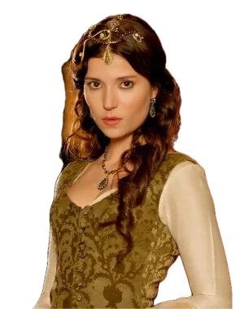</div><div class="fg out"></div>
      <span class="of">Birinci Vekil</span>
      <span class="nf"><span class="star  "><svg viewBox="0 0 24 24"><polygon points="12.00,0.60 15.41,3.78 20.06,3.94 20.22,8.59 23.40,12.00 20.22,15.41 20.06,20.06 15.41,20.22 12.00,23.40 8.59,20.22 3.94,20.06 3.78,15.41 0.60,12.00 3.78,8.59 3.94,3.94 8.59,3.78" fill="#d2ab52" stroke="#6b4d0f" stroke-width="1"/></svg><span>1</span></span></span>
      <span class="kl "></span>
      <span class="rd"><svg class="gl " viewBox="0 0 20 20" aria-hidden="true"><path d="M4 10.5l4 4 8-9"/></svg></span>
      </div>
    <div class="pl"><b>Ayşe</b><i>Hatice</i></div>
    <div class="ld"></div>
  </div><div class="st dim" style="--nw:90px;--nh:106px">
    <div class="nc"><svg viewBox="0 0 100 120" preserveAspectRatio="none" aria-hidden="true"><path d="M.5 119.5V46C.5 22 30 12 50 .6 70 12 99.5 22 99.5 46v73.5z"/></svg><div class="fg in">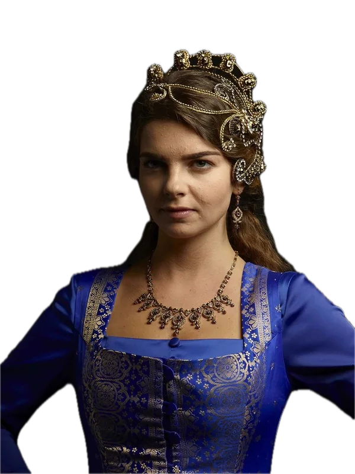</div><div class="fg out"></div>
      
      <span class="nf"><span class="star zero "><svg viewBox="0 0 24 24"><polygon points="12.00,0.60 15.41,3.78 20.06,3.94 20.22,8.59 23.40,12.00 20.22,15.41 20.06,20.06 15.41,20.22 12.00,23.40 8.59,20.22 3.94,20.06 3.78,15.41 0.60,12.00 3.78,8.59 3.94,3.94 8.59,3.78" fill="#d2ab52" stroke="#6b4d0f" stroke-width="1"/></svg><span>0</span></span></span>
      <span class="kl down">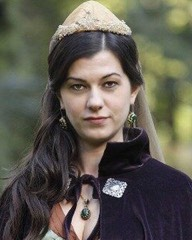</span>
      <span class="rd"><svg class="gl " viewBox="0 0 20 20" aria-hidden="true"><path d="M4 10.5l4 4 8-9"/></svg></span>
      </div>
    <div class="pl"><b>Elif</b><i>Mihrimah</i></div>
    <div class="ld"></div>
  </div><div class="st dim" style="--nw:90px;--nh:106px">
    <div class="nc"><svg viewBox="0 0 100 120" preserveAspectRatio="none" aria-hidden="true"><path d="M.5 119.5V46C.5 22 30 12 50 .6 70 12 99.5 22 99.5 46v73.5z"/></svg><div class="fg in"></div><div class="fg out"></div>
      
      <span class="nf"><span class="star  "><svg viewBox="0 0 24 24"><polygon points="12.00,0.60 15.41,3.78 20.06,3.94 20.22,8.59 23.40,12.00 20.22,15.41 20.06,20.06 15.41,20.22 12.00,23.40 8.59,20.22 3.94,20.06 3.78,15.41 0.60,12.00 3.78,8.59 3.94,3.94 8.59,3.78" fill="#d2ab52" stroke="#6b4d0f" stroke-width="1"/></svg><span>2</span></span></span>
      <span class="kl "></span>
      
      </div>
    <div class="pl"><b>Mert</b><i>Rüstem</i></div>
    <div class="ld"></div>
  </div><div class="st sul dim" style="--nw:104px;--nh:124px">
    <div class="nc"><svg viewBox="0 0 100 120" preserveAspectRatio="none" aria-hidden="true"><path d="M.5 119.5V46C.5 22 30 12 50 .6 70 12 99.5 22 99.5 46v73.5z"/></svg><div class="fg in">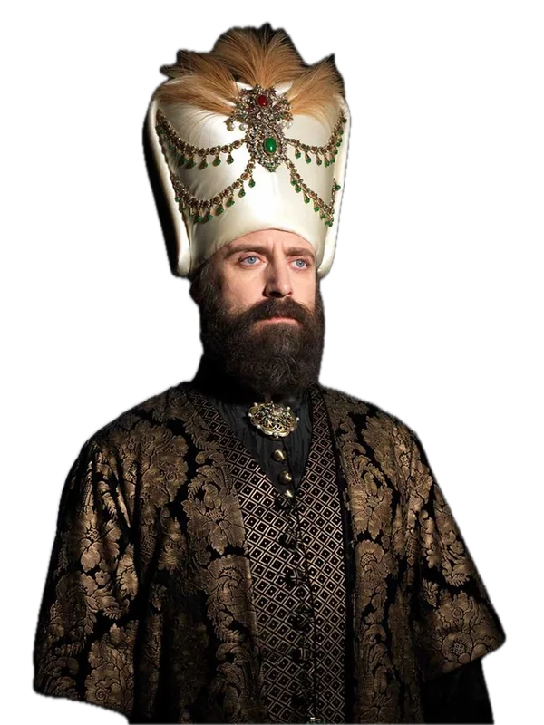</div><div class="fg out"></div>
      
      
      
      
      </div>
    <div class="pl"><b>Kerem</b><i>Süleyman</i></div>
    <div class="ld"></div>
  </div><div class="st vk legal" style="--nw:90px;--nh:106px">
    <div class="nc"><svg viewBox="0 0 100 120" preserveAspectRatio="none" aria-hidden="true"><path d="M.5 119.5V46C.5 22 30 12 50 .6 70 12 99.5 22 99.5 46v73.5z"/></svg><div class="fg in"></div><div class="fg out"></div>
      <span class="of">İkinci Vekil</span>
      <span class="nf"><span class="star  "><svg viewBox="0 0 24 24"><polygon points="12.00,0.60 15.41,3.78 20.06,3.94 20.22,8.59 23.40,12.00 20.22,15.41 20.06,20.06 15.41,20.22 12.00,23.40 8.59,20.22 3.94,20.06 3.78,15.41 0.60,12.00 3.78,8.59 3.94,3.94 8.59,3.78" fill="#d2ab52" stroke="#6b4d0f" stroke-width="1"/></svg><span>2</span></span></span>
      <span class="kl "></span>
      <span class="rd"><svg class="gl " viewBox="0 0 20 20" aria-hidden="true"><path d="M4 10.5l4 4 8-9"/></svg></span>
      </div>
    <div class="pl"><b>Defne</b><i>Hürrem</i></div>
    <div class="ld"></div>
  </div><div class="st dim" style="--nw:90px;--nh:106px">
    <div class="nc"><svg viewBox="0 0 100 120" preserveAspectRatio="none" aria-hidden="true"><path d="M.5 119.5V46C.5 22 30 12 50 .6 70 12 99.5 22 99.5 46v73.5z"/></svg><div class="fg in">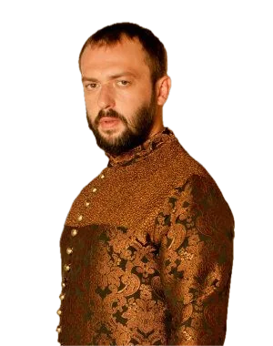</div><div class="fg out"></div>
      
      <span class="nf"><span class="star  "><svg viewBox="0 0 24 24"><polygon points="12.00,0.60 15.41,3.78 20.06,3.94 20.22,8.59 23.40,12.00 20.22,15.41 20.06,20.06 15.41,20.22 12.00,23.40 8.59,20.22 3.94,20.06 3.78,15.41 0.60,12.00 3.78,8.59 3.94,3.94 8.59,3.78" fill="#d2ab52" stroke="#6b4d0f" stroke-width="1"/></svg><span>1</span></span></span>
      <span class="kl "></span>
      <span class="rd"><svg class="gl " viewBox="0 0 20 20" aria-hidden="true"><path d="M4 10.5l4 4 8-9"/></svg></span>
      </div>
    <div class="pl"><b>Can</b><i>Pargalı</i></div>
    <div class="ld"></div>
  </div><div class="st you dim" style="--nw:90px;--nh:106px">
    <div class="nc"><svg viewBox="0 0 100 120" preserveAspectRatio="none" aria-hidden="true"><path d="M.5 119.5V46C.5 22 30 12 50 .6 70 12 99.5 22 99.5 46v73.5z"/></svg><div class="fg in">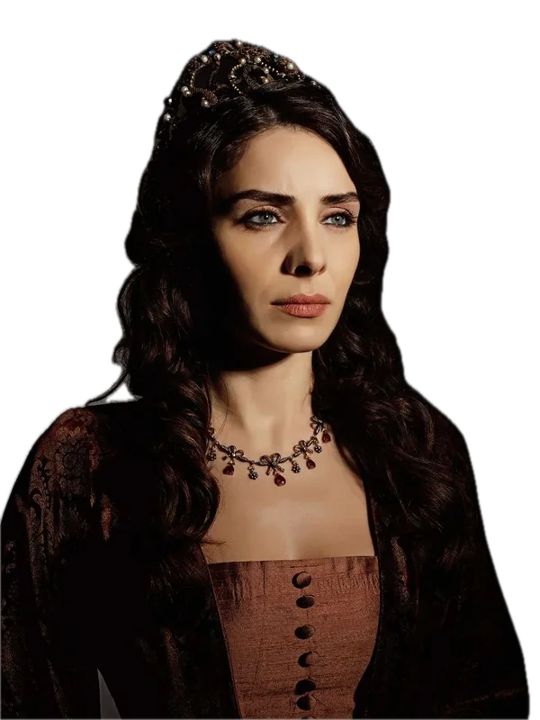</div><div class="fg out"></div>
      
      <span class="nf"><span class="star  "><svg viewBox="0 0 24 24"><polygon points="12.00,0.60 15.41,3.78 20.06,3.94 20.22,8.59 23.40,12.00 20.22,15.41 20.06,20.06 15.41,20.22 12.00,23.40 8.59,20.22 3.94,20.06 3.78,15.41 0.60,12.00 3.78,8.59 3.94,3.94 8.59,3.78" fill="#d2ab52" stroke="#6b4d0f" stroke-width="1"/></svg><span>1</span></span></span>
      <span class="kl ">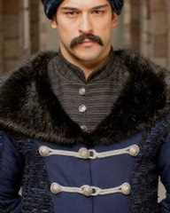</span>
      
      </div>
    <div class="pl"><b>Selin (sen)</b><i>Mahidevran</i></div>
    <div class="ld"></div>
  </div></div></div></div><div class="shelf zl"><div class="bd"><div class="mine">
  <div class="tf">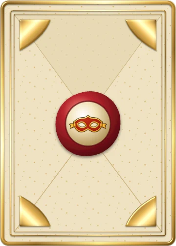<small>Taraf, Hırs<br>basılı tut</small></div>
  <ul class="pw">
    <li class=""><i class="d"></i><b>İtiraz</b><small>temel güç, hazır</small></li>
    <li class="lock"><i class="d"></i><b>Sürgün</b><small>Hırs'la açılır</small></li>
    <li class=""><i class="d"></i><b>Malkoçoğlu</b><small>Mühür'e çevirir</small></li>
  </ul></div><div class="hand">
  <div class="hc  ">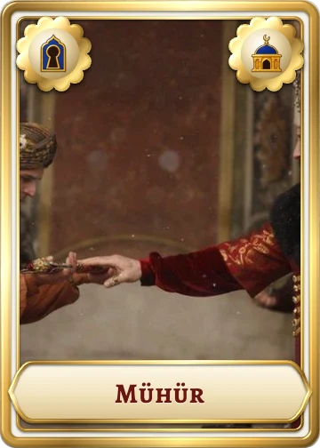</div>
  <div class="hc sel">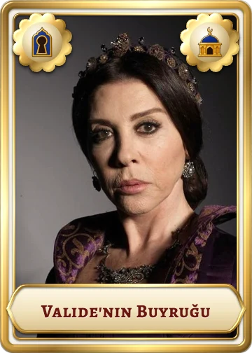</div>
  <div class="hc ">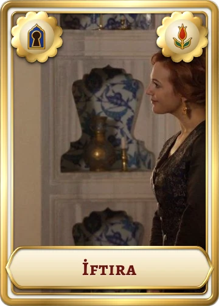<span class="via">Harem kartı<b>Malkoçoğlu ile Mühür</b></span></div>
</div>
    <div class="pr"><div class="stp"><span class="tk"><i class="done"></i><i class="done"></i><i class="now"></i><i class=""></i><i class=""></i><i class=""></i></span>Tertip, 1. dalga</div>
      <p class="vo"><b>Valide'nin Buyruğu.</b> Bir Vekili değiştirir; yerine geleni sen seçersin.<small>Hedef seç: Ayşe ya da Defne.</small></p>
      <div class="bt"><span class="b">Pas geç</span><span class="b off">Mühürle</span></div></div></div><i class="home"></i></div><i class="island"></i></div></div>
    <figcaption><b>Tertip, your move, at 852×393.</b> Selin has lifted Valide'nin Buyruğu. The two Vekils are the legal targets and stay in colour; everyone else recedes. One sentence says what the card does; two buttons answer it.</figcaption></figure>
  <ul class="toc"><li><a href="#teshis">What is wrong with v2</a></li><li><a href="#tur">What the genre needs</a></li><li><a href="#ilkeler">Rules of the system</a></li><li><a href="#secenekler">Options</a></li><li><a href="#sistem">Tokens and components</a></li><li><a href="#ekranlar">Every screen</a></li><li><a href="#yapim">Build notes</a></li><li><a href="#kararlar">Decisions for Jingle</a></li></ul>
</header>

<section id="teshis">
  <h2>What is wrong with v2</h2>
  <p>Both of your complaints are right, and they have the same cause. v2 copied the cards' vocabulary (gold rim, enamel, cartouche) onto every control. Drawn in CSS at 20 to 60 px, that vocabulary turns into the house style of free-to-play palace sims such as Game of Sultans, which is why it reads as a knock-off.</p>
  <figure class="shot">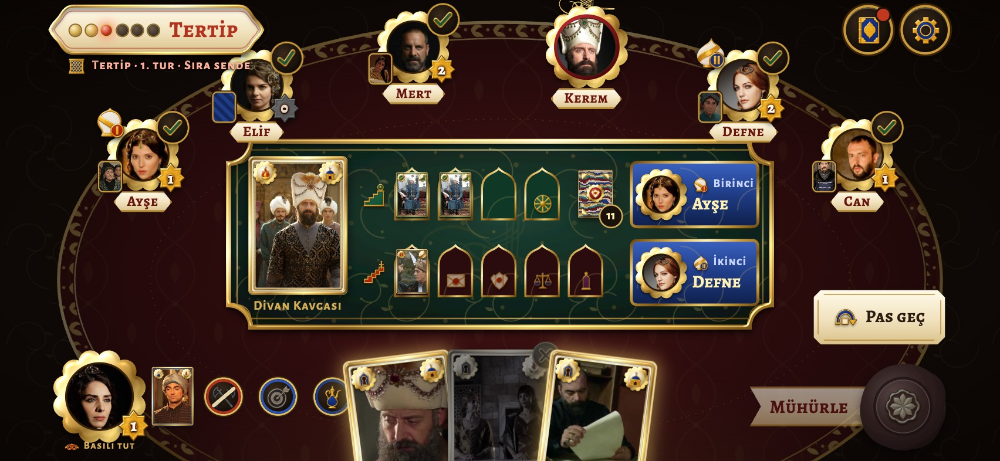
    <span class="pin" style="left:41%;top:14%">1</span><span class="pin" style="left:88%;top:62%">2</span><span class="pin" style="left:24%;top:58%">3</span>
    <span class="pin" style="left:14%;top:30%">4</span><span class="pin" style="left:47%;top:43%">5</span><span class="pin" style="left:50%;top:92%">6</span>
    <span class="pin" style="left:28%;top:79%">7</span><span class="pin" style="left:17%;top:15%">8</span><span class="pin" style="left:90%;top:86%">9</span></figure>
  <ol class="find">
    <li><span><b>Gold on everything.</b> Seats, coins, tray, plaques, buttons and labels share one bevelled gold gradient. The cards no longer stand out from the furniture.</span></li>
    <li><span><b>Eleven container shapes.</b> Scalloped medallion, scrolled cartouche, hexagonal plaque, wax seal, arrow ribbon, paper slip, niche, star coin, round boss, shield tab, lozenge name tag. None of them means anything.</span></li>
    <li><span><b>Five saturated fields at once.</b> Red carpet, green tray, blue plaques, ivory labels and gold all compete at full strength.</span></li>
    <li><span><b>Faces at 40 px.</b> The show's stills are the best asset in the project. Here each is cropped into a 56 px disc with up to four badges hanging off its rim.</span></li>
    <li><span><b>The score is the smallest thing.</b> The two tracks decide the game and are drawn as 30×42 px niches inside a tray that also holds the Crisis, the deck and both Vekils.</span></li>
    <li><span><b>The hand is cropped.</b> Card names and text sit below the screen edge, so you recognise your three cards by the top of a photo.</span></li>
    <li><span><b>Powers are unlabelled pips.</b> Three round icons with no words. You can't tell which is used or what any of them does.</span></li>
    <li><span><b>One small-caps serif does every job</b>, from 8 px labels to titles, with a shadow under it. The step line runs into Elif's seat.</span></li>
    <li><span><b>Materials faked in CSS.</b> Wax, lacquer and scroll rollers need a painter. Drawn with gradients they are the low-effort signal you noticed.</span></li>
  </ol>
</section>

<section id="tur">
  <h2>Is v2 the best this genre can do? No</h2>
  <p>Entrika is a talking game. Players look at each other, or at the call, and glance at the phone. The screen has to answer five questions in one glance, in this order: is it my move, what is the score, who holds the two seats, who is ready, what can I play. v2 answers the first in 10.5 px text and the second in the smallest element on screen.</p>
  <p>It is also a two-thumb landscape screen. Thumbs rest on the bottom corners; the top centre is a stretch. Apple's guideline for a touch target is 44 pt and Android's is 48 dp. So decisions belong at the bottom right, reading belongs in the middle, and anything in the top row must be a large tap target, never a drag.</p>
  <h3>What phone games do well, and what v3 takes</h3>
  <div class="tbl"><table class="t">
    <thead><tr><th>Game</th><th>What it does on a phone</th><th>Taken into v3</th></tr></thead><tbody>
    <tr><td>Marvel Snap</td><td>Cards are the only detailed objects; the board and chrome are flat and dark. One End Turn button, bottom right. Its designers treat on-card text complexity as a budget (<a href="https://www.gdcvault.com/play/1029024/Designing-MARVEL-SNAP">GDC 2023 talk</a>).</td><td>Quiet chrome. One primary button in the right thumb zone.</td></tr>
    <tr><td>Balatro (mobile)</td><td>The port reworked the UI around drag and drop with very large drop zones; reviewers still found text small on standard iPhones (<a href="https://www.engadget.com/gaming/balatro-is-an-almost-perfect-mobile-port-163050971.html">Engadget</a>).</td><td>Seat targets of 104×180 px. No text under 11 px.</td></tr>
    <tr><td>Pokémon TCG Pocket</td><td>Presentation is the product: a tapped card fills the screen, and card text is short enough to parse on a phone (<a href="https://www.nintendolife.com/reviews/mobile/pokemon-trading-card-game-pocket">Nintendo Life</a>).</td><td>Card detail at 254 px with the rule restated beside it in interface type.</td></tr>
    <tr><td>Among Us, meeting screen</td><td>Player tiles in rows. Tap a tile, then confirm. An "I voted" mark appears without saying for whom.</td><td>Tap a card, tap a seat, then seal. The red ready seal.</td></tr>
    <tr><td>Triple Agent</td><td>A hidden-role party game where the device runs the session: one instruction at a time, no rulebook (<a href="https://apps.apple.com/app/triple-agent/id1247445624">App Store</a>).</td><td>The prompt: one sentence and at most two buttons, always in the same place.</td></tr>
    <tr><td>Jackbox games, Sunderfolk</td><td>The phone is a private controller while attention is elsewhere.</td><td>The public and private halves of the screen.</td></tr>
    <tr><td>Secret Hitler (secrethitler.io and the box)</td><td>The tracks are the board. The physical game looks expensive with three flat colours and heavy type.</td><td>Tracks always on screen. Flat colour, no bevels.</td></tr>
    <tr><td>Reverse: 1999, Arknights</td><td>Landscape phone interfaces that read as premium through type, thin rules and flat fields.</td><td>Hierarchy from type and spacing, not from frames.</td></tr>
    <tr><td>Hearthstone, Legends of Runeterra (mobile)</td><td>Fanned hand that lifts on touch; a turn banner that sweeps the board.</td><td>The banner becomes the full-screen public moments. The fan is dropped: the hand limit is 3, so whole cards fit.</td></tr>
    <tr><td>Reigns</td><td>One decision per screen.</td><td>Private decisions (Kader, peeks, secrets) take the whole screen.</td></tr>
    <tr><td>Game of Sultans and its clones</td><td>Bevelled gold on every control.</td><td>Nothing. This is the look v2 drifted into.</td></tr>
  </tbody></table></div>
  <p class="note">Linked rows were checked against the linked source this session. The others are described from the shipped games; this page can't embed outside screenshots.</p>
  <h3>v2 against v3, measured on the same screen</h3>
  <div class="tbl"><table class="t">
    <thead><tr><th></th><th>v2</th><th>v3</th></tr></thead><tbody>
    <tr><td>Smallest text</td><td class="num">8 px</td><td class="num good">11 px</td></tr>
    <tr><td>A seat</td><td>56 px disc, 40 px of photo</td><td class="good">90×106 px figure, head and shoulders</td></tr>
    <tr><td>Seat tap target</td><td class="num">68×68 px</td><td class="num good">104×180 px</td></tr>
    <tr><td>A hand card</td><td>84 px, name and text off-screen</td><td class="good">96 px, whole card with its name bar</td></tr>
    <tr><td>Container shapes</td><td class="num">11</td><td class="good">4: arch for people, rectangle for documents, circle for a seal, star for Nüfuz</td></tr>
    <tr><td>Colour fields at rest</td><td>red, green, blue, ivory, gold, black</td><td class="good">paper and lacquer, plus four signals</td></tr>
    <tr><td>Commit and decline</td><td>wax seal with ribbon, lacquer plaque, paper slip</td><td class="good">one button in two weights</td></tr>
    <tr><td>Your powers</td><td>three unlabelled 28 px pips</td><td class="good">a named list with each power's state</td></tr>
    <tr><td>Who served, what happened</td><td>a text log in a drawer</td><td class="good">Sicil: one row per crisis</td></tr>
  </tbody></table></div>
</section>

<section id="ilkeler">
  <h2>Rules of the system</h2>
  <ul class="rules">
    <li><b>Public is paper, private is lacquer.</b>Whatever the whole table sees is drawn on paper: the court, the tracks, reveals, the Decree. Whatever only you see is on dark lacquer: your hand, your Taraf, the Kader cards, a peek. A hidden-role game needs this distinction constantly, so the surface carries it.</li>
    <li><b>Cards are the only ornate objects.</b>The card frames keep their gold, enamel and gems. Nothing else on screen has a bevel, a glow or a gradient you can see.</li>
    <li><b>The cast is the court.</b>Each player is their Character's cut-out in an arched niche, the way a miniature sets a figure on a flat ground. Süleyman sits in the middle on gold.</li>
    <li><b>One meaning per colour.</b>Gold: you can act here, and the Sultan. Lapis: office, the two Vekils. Red: Hıyanet, Hain, a sealed commitment. Malachite: Hizmet, Sadık.</li>
    <li><b>One sentence, two buttons.</b>Every decision arrives in the same block at the bottom right: the step, one sentence in the game's voice, at most two buttons.</li>
    <li><b>Three voices in type.</b>Sans for the interface. Italic serif when the game speaks. Small caps only on card objects.</li>
  </ul>
</section>

<section id="secenekler">
  <h2>Options</h2>
  <h3>Surface: three directions on the same screen</h3>
  <div class="seg" role="group" aria-label="Surface direction"><button id="th-split" aria-pressed="true" data-th="th-split">Kâğıt ve lake</button><button id="th-paper" aria-pressed="false" data-th="th-paper">Murakka, all paper</button><button id="th-lake" aria-pressed="false" data-th="th-lake">Lake, all dark</button></div>
  <figure id="thfig"><div class="fr wide"><div class="ph ui th-split" lang="tr"><div class="pub zp"><div class="bd"><div class="mz">
  <div class="trk h"><span>Hizmet</span><span class="sl"><i class="on "></i><i class="on "></i><i class=" "></i><i class=" "></i></span></div>
  <div class="kz"><small>Kriz 4</small><b>Divan Kavgası</b><span class="chipf">Divan</span></div>
  <div class="r"><div class="trk x"><span class="sl"><i class="on "></i><i class=" "></i><i class=" "></i><i class=" "></i><i class=" end"></i></span><span>Hıyanet</span></div>
  <div class="nav"><span class="dot"><svg class="gl " viewBox="0 0 20 20" aria-hidden="true"><path d="M5 5h10M5 10h10M5 15h6"/></svg></span><span><svg class="gl " viewBox="0 0 20 20" aria-hidden="true"><path d="M3 6h7M15 6h2M3 14h2M10 14h7"/><circle cx="12.5" cy="6" r="2.2"/><circle cx="7.5" cy="14" r="2.2"/></svg></span></div></div>
</div><div class="ct" style="--slot:104px"><div class="st vk legal" style="--nw:90px;--nh:106px">
    <div class="nc"><svg viewBox="0 0 100 120" preserveAspectRatio="none" aria-hidden="true"><path d="M.5 119.5V46C.5 22 30 12 50 .6 70 12 99.5 22 99.5 46v73.5z"/></svg><div class="fg in"></div><div class="fg out"></div>
      <span class="of">Birinci Vekil</span>
      <span class="nf"><span class="star  "><svg viewBox="0 0 24 24"><polygon points="12.00,0.60 15.41,3.78 20.06,3.94 20.22,8.59 23.40,12.00 20.22,15.41 20.06,20.06 15.41,20.22 12.00,23.40 8.59,20.22 3.94,20.06 3.78,15.41 0.60,12.00 3.78,8.59 3.94,3.94 8.59,3.78" fill="#d2ab52" stroke="#6b4d0f" stroke-width="1"/></svg><span>1</span></span></span>
      <span class="kl "></span>
      <span class="rd"><svg class="gl " viewBox="0 0 20 20" aria-hidden="true"><path d="M4 10.5l4 4 8-9"/></svg></span>
      </div>
    <div class="pl"><b>Ayşe</b><i>Hatice</i></div>
    <div class="ld"></div>
  </div><div class="st dim" style="--nw:90px;--nh:106px">
    <div class="nc"><svg viewBox="0 0 100 120" preserveAspectRatio="none" aria-hidden="true"><path d="M.5 119.5V46C.5 22 30 12 50 .6 70 12 99.5 22 99.5 46v73.5z"/></svg><div class="fg in"></div><div class="fg out"></div>
      
      <span class="nf"><span class="star zero "><svg viewBox="0 0 24 24"><polygon points="12.00,0.60 15.41,3.78 20.06,3.94 20.22,8.59 23.40,12.00 20.22,15.41 20.06,20.06 15.41,20.22 12.00,23.40 8.59,20.22 3.94,20.06 3.78,15.41 0.60,12.00 3.78,8.59 3.94,3.94 8.59,3.78" fill="#d2ab52" stroke="#6b4d0f" stroke-width="1"/></svg><span>0</span></span></span>
      <span class="kl down"></span>
      <span class="rd"><svg class="gl " viewBox="0 0 20 20" aria-hidden="true"><path d="M4 10.5l4 4 8-9"/></svg></span>
      </div>
    <div class="pl"><b>Elif</b><i>Mihrimah</i></div>
    <div class="ld"></div>
  </div><div class="st dim" style="--nw:90px;--nh:106px">
    <div class="nc"><svg viewBox="0 0 100 120" preserveAspectRatio="none" aria-hidden="true"><path d="M.5 119.5V46C.5 22 30 12 50 .6 70 12 99.5 22 99.5 46v73.5z"/></svg><div class="fg in"></div><div class="fg out"></div>
      
      <span class="nf"><span class="star  "><svg viewBox="0 0 24 24"><polygon points="12.00,0.60 15.41,3.78 20.06,3.94 20.22,8.59 23.40,12.00 20.22,15.41 20.06,20.06 15.41,20.22 12.00,23.40 8.59,20.22 3.94,20.06 3.78,15.41 0.60,12.00 3.78,8.59 3.94,3.94 8.59,3.78" fill="#d2ab52" stroke="#6b4d0f" stroke-width="1"/></svg><span>2</span></span></span>
      <span class="kl "></span>
      
      </div>
    <div class="pl"><b>Mert</b><i>Rüstem</i></div>
    <div class="ld"></div>
  </div><div class="st sul dim" style="--nw:104px;--nh:124px">
    <div class="nc"><svg viewBox="0 0 100 120" preserveAspectRatio="none" aria-hidden="true"><path d="M.5 119.5V46C.5 22 30 12 50 .6 70 12 99.5 22 99.5 46v73.5z"/></svg><div class="fg in"></div><div class="fg out"></div>
      
      
      
      
      </div>
    <div class="pl"><b>Kerem</b><i>Süleyman</i></div>
    <div class="ld"></div>
  </div><div class="st vk legal" style="--nw:90px;--nh:106px">
    <div class="nc"><svg viewBox="0 0 100 120" preserveAspectRatio="none" aria-hidden="true"><path d="M.5 119.5V46C.5 22 30 12 50 .6 70 12 99.5 22 99.5 46v73.5z"/></svg><div class="fg in"></div><div class="fg out"></div>
      <span class="of">İkinci Vekil</span>
      <span class="nf"><span class="star  "><svg viewBox="0 0 24 24"><polygon points="12.00,0.60 15.41,3.78 20.06,3.94 20.22,8.59 23.40,12.00 20.22,15.41 20.06,20.06 15.41,20.22 12.00,23.40 8.59,20.22 3.94,20.06 3.78,15.41 0.60,12.00 3.78,8.59 3.94,3.94 8.59,3.78" fill="#d2ab52" stroke="#6b4d0f" stroke-width="1"/></svg><span>2</span></span></span>
      <span class="kl "></span>
      <span class="rd"><svg class="gl " viewBox="0 0 20 20" aria-hidden="true"><path d="M4 10.5l4 4 8-9"/></svg></span>
      </div>
    <div class="pl"><b>Defne</b><i>Hürrem</i></div>
    <div class="ld"></div>
  </div><div class="st dim" style="--nw:90px;--nh:106px">
    <div class="nc"><svg viewBox="0 0 100 120" preserveAspectRatio="none" aria-hidden="true"><path d="M.5 119.5V46C.5 22 30 12 50 .6 70 12 99.5 22 99.5 46v73.5z"/></svg><div class="fg in"></div><div class="fg out"></div>
      
      <span class="nf"><span class="star  "><svg viewBox="0 0 24 24"><polygon points="12.00,0.60 15.41,3.78 20.06,3.94 20.22,8.59 23.40,12.00 20.22,15.41 20.06,20.06 15.41,20.22 12.00,23.40 8.59,20.22 3.94,20.06 3.78,15.41 0.60,12.00 3.78,8.59 3.94,3.94 8.59,3.78" fill="#d2ab52" stroke="#6b4d0f" stroke-width="1"/></svg><span>1</span></span></span>
      <span class="kl "></span>
      <span class="rd"><svg class="gl " viewBox="0 0 20 20" aria-hidden="true"><path d="M4 10.5l4 4 8-9"/></svg></span>
      </div>
    <div class="pl"><b>Can</b><i>Pargalı</i></div>
    <div class="ld"></div>
  </div><div class="st you dim" style="--nw:90px;--nh:106px">
    <div class="nc"><svg viewBox="0 0 100 120" preserveAspectRatio="none" aria-hidden="true"><path d="M.5 119.5V46C.5 22 30 12 50 .6 70 12 99.5 22 99.5 46v73.5z"/></svg><div class="fg in"></div><div class="fg out"></div>
      
      <span class="nf"><span class="star  "><svg viewBox="0 0 24 24"><polygon points="12.00,0.60 15.41,3.78 20.06,3.94 20.22,8.59 23.40,12.00 20.22,15.41 20.06,20.06 15.41,20.22 12.00,23.40 8.59,20.22 3.94,20.06 3.78,15.41 0.60,12.00 3.78,8.59 3.94,3.94 8.59,3.78" fill="#d2ab52" stroke="#6b4d0f" stroke-width="1"/></svg><span>1</span></span></span>
      <span class="kl "></span>
      
      </div>
    <div class="pl"><b>Selin (sen)</b><i>Mahidevran</i></div>
    <div class="ld"></div>
  </div></div></div></div><div class="shelf zl"><div class="bd"><div class="mine">
  <div class="tf"><small>Taraf, Hırs<br>basılı tut</small></div>
  <ul class="pw">
    <li class=""><i class="d"></i><b>İtiraz</b><small>temel güç, hazır</small></li>
    <li class="lock"><i class="d"></i><b>Sürgün</b><small>Hırs'la açılır</small></li>
    <li class=""><i class="d"></i><b>Malkoçoğlu</b><small>Mühür'e çevirir</small></li>
  </ul></div><div class="hand">
  <div class="hc  "></div>
  <div class="hc sel"></div>
  <div class="hc "><span class="via">Harem kartı<b>Malkoçoğlu ile Mühür</b></span></div>
</div>
    <div class="pr"><div class="stp"><span class="tk"><i class="done"></i><i class="done"></i><i class="now"></i><i class=""></i><i class=""></i><i class=""></i></span>Tertip, 1. dalga</div>
      <p class="vo"><b>Valide'nin Buyruğu.</b> Bir Vekili değiştirir; yerine geleni sen seçersin.<small>Hedef seç: Ayşe ya da Defne.</small></p>
      <div class="bt"><span class="b">Pas geç</span><span class="b off">Mühürle</span></div></div></div><i class="home"></i></div><i class="island"></i></div></div></figure>
  <div class="opt">
    <div><b class="rec">Kâğıt ve lake (recommended)</b>Paper court over a lacquer shelf. The split says what is public and what is yours without a label. Cards sit on the dark half, where their gold reads best.</div>
    <div><b>Murakka</b>Everything on paper, like an album page. Calmest and closest to art direction B. Loses the public and private distinction, and three ivory Entrika cards on a tan shelf have less contrast.</div>
    <div><b>Lake</b>Everything on lapis-black. Best for the stills, kindest in a dark room. It is the nearest to v2, and near-black with gold is the commonest look in the genre.</div>
  </div>
  <h3>Layout: where the table goes</h3>
  <div class="grid3">
    <figure><div class="fr "><div class="ph wf"><svg class="reach" viewBox="0 0 852 393" aria-hidden="true"><circle cx="20" cy="400" r="235"/><circle cx="832" cy="400" r="235"/></svg><i class="x r f" style="left:82.41943053219825px;top:131.95783655935293px;width:56px;height:56px"></i><i class="x r f" style="left:150.0828359438413px;top:66.51970310295329px;width:56px;height:56px"></i><i class="x r f" style="left:261.6755381579011px;top:21.898308376500495px;width:56px;height:56px"></i><i class="x r f" style="left:397.4240416392535px;top:6.000271109434777px;width:56px;height:56px"></i><i class="x r f" style="left:533.2746011677189px;top:21.64261932133536px;width:56px;height:56px"></i><i class="x r f" style="left:645.1553878603706px;top:66.05363141759867px;width:56px;height:56px"></i><i class="x r f" style="left:713.2418595003735px;top:131.3639670921598px;width:56px;height:56px"></i><i class="x " style="left:207px;top:114px;width:438px;height:150px"></i><i class="x f" style="left:223px;top:126px;width:80px;height:112px">Kriz</i><i class="x " style="left:313px;top:136px;width:212px;height:42px">Hizmet</i><i class="x " style="left:313px;top:198px;width:212px;height:42px">Hıyanet</i><i class="x f" style="left:531px;top:130px;width:104px;height:54px">Vekil I</i><i class="x f" style="left:531px;top:193px;width:104px;height:54px">Vekil II</i>
    <i class="x r" style="left:59px;top:284px;width:72px;height:72px">Sen</i><i class="x " style="left:181px;top:298px;width:132px;height:44px">Güçler</i><i class="x f" style="left:343px;top:282px;width:84px;height:118px"></i><i class="x f" style="left:413px;top:282px;width:84px;height:118px">El</i><i class="x f" style="left:483px;top:282px;width:84px;height:118px"></i><i class="x " style="left:650px;top:256px;width:110px;height:44px">Pas geç</i><i class="x f" style="left:600px;top:310px;width:190px;height:60px">Mühürle</i><i class="x " style="left:63px;top:5px;width:200px;height:38px">Adım</i></div></div><figcaption><b>Masa (v2).</b> Seats on an arc, a tray in the middle. The arc leaves the corners empty and pushes the centre into a 438×150 box.</figcaption></figure>
    <figure><div class="fr "><div class="ph wf"><svg class="reach" viewBox="0 0 852 393" aria-hidden="true"><circle cx="20" cy="400" r="235"/><circle cx="832" cy="400" r="235"/></svg><i class="x " style="left:59px;top:9px;width:150px;height:30px">Hizmet</i><i class="x " style="left:300px;top:9px;width:252px;height:30px">Kriz</i><i class="x " style="left:570px;top:9px;width:160px;height:30px">Hıyanet</i><i class="x a f" style="left:69px;top:80px;width:90px;height:106px"></i><i class="x a f" style="left:173px;top:80px;width:90px;height:106px"></i><i class="x a f" style="left:277px;top:80px;width:90px;height:106px"></i><i class="x a f" style="left:381px;top:62px;width:90px;height:124px"></i><i class="x a f" style="left:485px;top:80px;width:90px;height:106px"></i><i class="x a f" style="left:589px;top:80px;width:90px;height:106px"></i><i class="x a f" style="left:693px;top:80px;width:90px;height:106px"></i><i class="x shelfx" style="left:0px;top:230px;width:852px;height:163px"></i>
    <i class="x " style="left:59px;top:244px;width:172px;height:112px">Taraf, güçler</i><i class="x f" style="left:247px;top:236px;width:96px;height:134px"></i><i class="x f" style="left:352px;top:236px;width:96px;height:134px">El</i><i class="x f" style="left:457px;top:236px;width:96px;height:134px"></i><i class="x " style="left:565px;top:243px;width:228px;height:60px">Tek cümle</i><i class="x " style="left:595px;top:312px;width:88px;height:46px">Pas geç</i><i class="x f" style="left:691px;top:312px;width:102px;height:46px">Mühürle</i></div></div><figcaption><b>Divan (recommended).</b> One row of figures, Sultan centred. Tracks become one line. The bottom 40% is yours.</figcaption></figure>
    <figure><div class="fr "><div class="ph wf"><svg class="reach" viewBox="0 0 852 393" aria-hidden="true"><circle cx="20" cy="400" r="235"/><circle cx="832" cy="400" r="235"/></svg><i class="x f" style="left:59px;top:12px;width:168px;height:50px"></i><i class="x f" style="left:59px;top:70px;width:168px;height:50px"></i><i class="x f" style="left:59px;top:128px;width:168px;height:50px"></i><i class="x f" style="left:59px;top:186px;width:168px;height:50px"></i><i class="x f" style="left:625px;top:12px;width:168px;height:50px"></i><i class="x f" style="left:625px;top:70px;width:168px;height:50px"></i><i class="x f" style="left:625px;top:128px;width:168px;height:50px"></i><i class="x f" style="left:243px;top:12px;width:96px;height:134px">Kriz</i><i class="x " style="left:351px;top:12px;width:258px;height:40px">Hizmet</i><i class="x " style="left:351px;top:60px;width:258px;height:40px">Hıyanet</i><i class="x " style="left:351px;top:108px;width:258px;height:38px">Tek cümle</i>
    <i class="x f" style="left:273px;top:236px;width:96px;height:134px"></i><i class="x f" style="left:378px;top:236px;width:96px;height:134px">El</i><i class="x f" style="left:483px;top:236px;width:96px;height:134px"></i><i class="x " style="left:59px;top:252px;width:168px;height:104px">Taraf, güçler</i><i class="x " style="left:625px;top:196px;width:168px;height:60px">Pas geç</i><i class="x f" style="left:625px;top:266px;width:168px;height:90px">Mühürle</i></div></div><figcaption><b>Kanatlar.</b> Seats as two side columns under the thumbs. Best reach, but seats shrink to 168×50 rows and the order bends into a U.</figcaption></figure>
  </div>
  <p class="note">Shaded quarter-circles: comfortable thumb reach in a two-handed hold, drawn at 235 px from each bottom corner.</p>
  <div class="tbl"><table class="t">
    <thead><tr><th></th><th>Masa</th><th>Divan</th><th>Kanatlar</th></tr></thead><tbody>
    <tr><td>Seat size at 7 players</td><td>56 px disc</td><td class="good">90×106 figure</td><td>168×50 row, 40 px face</td></tr>
    <tr><td>Seat order reads as</td><td>a table, rotated on each phone</td><td class="good">one line, identical on every phone</td><td>a U, split across the screen</td></tr>
    <tr><td>"Beside Süleyman", "clockwise from his left"</td><td>depends on where he falls</td><td class="good">literally beside him; rightwards, then wraps</td><td>unclear across two columns</td></tr>
    <tr><td>Primary action</td><td>in reach</td><td class="good">in reach</td><td>in reach</td></tr>
    <tr><td>Targeting a seat</td><td>drag or tap across the screen</td><td>tap card, tap seat; far but 104 px wide</td><td class="good">under the thumbs</td></tr>
    <tr><td>Hand</td><td>84 px, cropped</td><td class="good">96 px, whole</td><td>96 px, whole, centre is out of reach</td></tr>
    <tr><td>Fits 8</td><td>yes, at 56 px</td><td>yes, 78×94 figures</td><td>yes, 4 and 4</td></tr>
  </tbody></table></div>
  <figure><div class="fr wide"><div class="ph ui th-split" lang="tr"><div class="pub zp"><div class="bd"><div class="mz">
  <div class="trk h"><span>Hizmet</span><span class="sl"><i class="on "></i><i class="on "></i><i class=" "></i><i class=" "></i></span></div>
  <div class="kz"><small>Kriz 4</small><b>Divan Kavgası</b><span class="chipf">Divan</span></div>
  <div class="r"><div class="trk x"><span class="sl"><i class="on "></i><i class=" "></i><i class=" "></i><i class=" "></i><i class=" end"></i></span><span>Hıyanet</span></div>
  <div class="nav"><span class="dot"><svg class="gl " viewBox="0 0 20 20" aria-hidden="true"><path d="M5 5h10M5 10h10M5 15h6"/></svg></span><span><svg class="gl " viewBox="0 0 20 20" aria-hidden="true"><path d="M3 6h7M15 6h2M3 14h2M10 14h7"/><circle cx="12.5" cy="6" r="2.2"/><circle cx="7.5" cy="14" r="2.2"/></svg></span></div></div>
</div><div class="ct" style="--slot:91px"><div class="st" style="--nw:78px;--nh:94px">
    <div class="nc"><svg viewBox="0 0 100 120" preserveAspectRatio="none" aria-hidden="true"><path d="M.5 119.5V46C.5 22 30 12 50 .6 70 12 99.5 22 99.5 46v73.5z"/></svg><svg viewBox="0 0 100 120" class="sil" aria-hidden="true"><circle cx="50" cy="46" r="17"/><path d="M14 120c2-30 16-44 36-44s34 14 36 44z"/></svg>
      
      <span class="nf"><span class="star  "><svg viewBox="0 0 24 24"><polygon points="12.00,0.60 15.41,3.78 20.06,3.94 20.22,8.59 23.40,12.00 20.22,15.41 20.06,20.06 15.41,20.22 12.00,23.40 8.59,20.22 3.94,20.06 3.78,15.41 0.60,12.00 3.78,8.59 3.94,3.94 8.59,3.78" fill="#d2ab52" stroke="#6b4d0f" stroke-width="1"/></svg><span>1</span></span></span>
      <span class="kl "></span>
      
      </div>
    <div class="pl"><b>Ozan</b><i>Mustafa</i></div>
    <div class="ld"></div>
  </div><div class="st vk" style="--nw:78px;--nh:94px">
    <div class="nc"><svg viewBox="0 0 100 120" preserveAspectRatio="none" aria-hidden="true"><path d="M.5 119.5V46C.5 22 30 12 50 .6 70 12 99.5 22 99.5 46v73.5z"/></svg><div class="fg in"></div><div class="fg out"></div>
      <span class="of">Birinci Vekil</span>
      <span class="nf"><span class="star  "><svg viewBox="0 0 24 24"><polygon points="12.00,0.60 15.41,3.78 20.06,3.94 20.22,8.59 23.40,12.00 20.22,15.41 20.06,20.06 15.41,20.22 12.00,23.40 8.59,20.22 3.94,20.06 3.78,15.41 0.60,12.00 3.78,8.59 3.94,3.94 8.59,3.78" fill="#d2ab52" stroke="#6b4d0f" stroke-width="1"/></svg><span>1</span></span></span>
      <span class="kl "></span>
      
      </div>
    <div class="pl"><b>Ayşe</b><i>Hatice</i></div>
    <div class="ld"></div>
  </div><div class="st" style="--nw:78px;--nh:94px">
    <div class="nc"><svg viewBox="0 0 100 120" preserveAspectRatio="none" aria-hidden="true"><path d="M.5 119.5V46C.5 22 30 12 50 .6 70 12 99.5 22 99.5 46v73.5z"/></svg><div class="fg in"></div><div class="fg out"></div>
      
      <span class="nf"><span class="star zero "><svg viewBox="0 0 24 24"><polygon points="12.00,0.60 15.41,3.78 20.06,3.94 20.22,8.59 23.40,12.00 20.22,15.41 20.06,20.06 15.41,20.22 12.00,23.40 8.59,20.22 3.94,20.06 3.78,15.41 0.60,12.00 3.78,8.59 3.94,3.94 8.59,3.78" fill="#d2ab52" stroke="#6b4d0f" stroke-width="1"/></svg><span>0</span></span></span>
      <span class="kl down"></span>
      
      </div>
    <div class="pl"><b>Elif</b><i>Mihrimah</i></div>
    <div class="ld"></div>
  </div><div class="st" style="--nw:78px;--nh:94px">
    <div class="nc"><svg viewBox="0 0 100 120" preserveAspectRatio="none" aria-hidden="true"><path d="M.5 119.5V46C.5 22 30 12 50 .6 70 12 99.5 22 99.5 46v73.5z"/></svg><div class="fg in"></div><div class="fg out"></div>
      
      <span class="nf"><span class="star  "><svg viewBox="0 0 24 24"><polygon points="12.00,0.60 15.41,3.78 20.06,3.94 20.22,8.59 23.40,12.00 20.22,15.41 20.06,20.06 15.41,20.22 12.00,23.40 8.59,20.22 3.94,20.06 3.78,15.41 0.60,12.00 3.78,8.59 3.94,3.94 8.59,3.78" fill="#d2ab52" stroke="#6b4d0f" stroke-width="1"/></svg><span>2</span></span></span>
      <span class="kl "></span>
      
      </div>
    <div class="pl"><b>Mert</b><i>Rüstem</i></div>
    <div class="ld"></div>
  </div><div class="st sul" style="--nw:92px;--nh:110px">
    <div class="nc"><svg viewBox="0 0 100 120" preserveAspectRatio="none" aria-hidden="true"><path d="M.5 119.5V46C.5 22 30 12 50 .6 70 12 99.5 22 99.5 46v73.5z"/></svg><div class="fg in"></div><div class="fg out"></div>
      
      
      
      
      </div>
    <div class="pl"><b>Kerem</b><i>Süleyman</i></div>
    <div class="ld"></div>
  </div><div class="st vk" style="--nw:78px;--nh:94px">
    <div class="nc"><svg viewBox="0 0 100 120" preserveAspectRatio="none" aria-hidden="true"><path d="M.5 119.5V46C.5 22 30 12 50 .6 70 12 99.5 22 99.5 46v73.5z"/></svg><div class="fg in"></div><div class="fg out"></div>
      <span class="of">İkinci Vekil</span>
      <span class="nf"><span class="star  "><svg viewBox="0 0 24 24"><polygon points="12.00,0.60 15.41,3.78 20.06,3.94 20.22,8.59 23.40,12.00 20.22,15.41 20.06,20.06 15.41,20.22 12.00,23.40 8.59,20.22 3.94,20.06 3.78,15.41 0.60,12.00 3.78,8.59 3.94,3.94 8.59,3.78" fill="#d2ab52" stroke="#6b4d0f" stroke-width="1"/></svg><span>2</span></span></span>
      <span class="kl "></span>
      
      </div>
    <div class="pl"><b>Defne</b><i>Hürrem</i></div>
    <div class="ld"></div>
  </div><div class="st" style="--nw:78px;--nh:94px">
    <div class="nc"><svg viewBox="0 0 100 120" preserveAspectRatio="none" aria-hidden="true"><path d="M.5 119.5V46C.5 22 30 12 50 .6 70 12 99.5 22 99.5 46v73.5z"/></svg><div class="fg in"></div><div class="fg out"></div>
      
      <span class="nf"><span class="star  "><svg viewBox="0 0 24 24"><polygon points="12.00,0.60 15.41,3.78 20.06,3.94 20.22,8.59 23.40,12.00 20.22,15.41 20.06,20.06 15.41,20.22 12.00,23.40 8.59,20.22 3.94,20.06 3.78,15.41 0.60,12.00 3.78,8.59 3.94,3.94 8.59,3.78" fill="#d2ab52" stroke="#6b4d0f" stroke-width="1"/></svg><span>1</span></span></span>
      <span class="kl "></span>
      
      </div>
    <div class="pl"><b>Can</b><i>Pargalı</i></div>
    <div class="ld"></div>
  </div><div class="st you" style="--nw:78px;--nh:94px">
    <div class="nc"><svg viewBox="0 0 100 120" preserveAspectRatio="none" aria-hidden="true"><path d="M.5 119.5V46C.5 22 30 12 50 .6 70 12 99.5 22 99.5 46v73.5z"/></svg><div class="fg in"></div><div class="fg out"></div>
      
      <span class="nf"><span class="star  "><svg viewBox="0 0 24 24"><polygon points="12.00,0.60 15.41,3.78 20.06,3.94 20.22,8.59 23.40,12.00 20.22,15.41 20.06,20.06 15.41,20.22 12.00,23.40 8.59,20.22 3.94,20.06 3.78,15.41 0.60,12.00 3.78,8.59 3.94,3.94 8.59,3.78" fill="#d2ab52" stroke="#6b4d0f" stroke-width="1"/></svg><span>1</span></span></span>
      <span class="kl "></span>
      
      </div>
    <div class="pl"><b>Selin (sen)</b><i>Mahidevran</i></div>
    <div class="ld"></div>
  </div></div></div></div><div class="shelf zl"><div class="bd"><div class="mine">
  <div class="tf"><small>Taraf, Hırs<br>basılı tut</small></div>
  <ul class="pw">
    <li class=""><i class="d"></i><b>İtiraz</b><small>temel güç, hazır</small></li>
    <li class="lock"><i class="d"></i><b>Sürgün</b><small>Hırs'la açılır</small></li>
    <li class=""><i class="d"></i><b>Malkoçoğlu</b><small>Mühür'e çevirir</small></li>
  </ul></div><div class="hand">
  <div class="hc  "></div>
  <div class="hc "></div>
  <div class="hc "><span class="via">Harem kartı<b>Malkoçoğlu ile Mühür</b></span></div>
</div>
    <div class="pr"><div class="stp"><span class="tk"><i class="done"></i><i class="done"></i><i class="now"></i><i class=""></i><i class=""></i><i class=""></i></span>Tertip, 1. dalga</div><p class="vo">Bir kart oyna ya da pas geç.<small>Divan krizi: iki kartın oynanabilir.</small></p>
      <div class="bt"><span class="b">Pas geç</span><span class="b off">Mühürle</span></div></div></div><i class="home"></i></div><i class="island"></i></div></div><figcaption><b>Divan with eight seats.</b> Slots drop from 104 to 91 px. Ozan plays Mustafa, who has no still yet: the niche holds a silhouette until the art exists.</figcaption></figure>
  <h3>Icons: emblems for the game, lines for the interface</h3>
  <p>The Varak ve mine emblems are small paintings. They work where they name a game term at 18 px or more, and on cards. As interface chrome (close, log, settings, ready, lock) they turn into gold smudges and bring the bevels back. v3 uses them for terms only and draws chrome as one-weight line glyphs.</p>
  <div class="icocmp">
    <figure><div class="rowi" style="background:#e5d9bb;--z:16px"></div><div class="rowi" style="background:#0d1324;--z:16px"></div><figcaption>Emblems as chrome at 16 px (v2)</figcaption></figure>
    <figure><div class="rowi ui" style="background:#e5d9bb;color:#241a12"><svg class="gl " viewBox="0 0 20 20" aria-hidden="true"><path d="M3 6h7M15 6h2M3 14h2M10 14h7"/><circle cx="12.5" cy="6" r="2.2"/><circle cx="7.5" cy="14" r="2.2"/></svg><svg class="gl " viewBox="0 0 20 20" aria-hidden="true"><path d="M5 5h10M5 10h10M5 15h6"/></svg><svg class="gl " viewBox="0 0 20 20" aria-hidden="true"><path d="M5 5l10 10M15 5L5 15"/></svg><svg class="gl " viewBox="0 0 20 20" aria-hidden="true"><path d="M4 10.5l4 4 8-9"/></svg><svg class="gl " viewBox="0 0 20 20" aria-hidden="true"><path d="M2 10s3-5 8-5 8 5 8 5-3 5-8 5-8-5-8-5z"/><circle cx="10" cy="10" r="2.2"/></svg></div><div class="rowi ui" style="background:#0d1324;color:#efe6cf"><svg class="gl " viewBox="0 0 20 20" aria-hidden="true"><path d="M3 6h7M15 6h2M3 14h2M10 14h7"/><circle cx="12.5" cy="6" r="2.2"/><circle cx="7.5" cy="14" r="2.2"/></svg><svg class="gl " viewBox="0 0 20 20" aria-hidden="true"><path d="M5 5h10M5 10h10M5 15h6"/></svg><svg class="gl " viewBox="0 0 20 20" aria-hidden="true"><path d="M5 5l10 10M15 5L5 15"/></svg><svg class="gl " viewBox="0 0 20 20" aria-hidden="true"><path d="M4 10.5l4 4 8-9"/></svg><svg class="gl " viewBox="0 0 20 20" aria-hidden="true"><path d="M2 10s3-5 8-5 8 5 8 5-3 5-8 5-8-5-8-5z"/><circle cx="10" cy="10" r="2.2"/></svg></div><figcaption>Line glyphs at 20 px (v3)</figcaption></figure>
    <figure><div class="rowi" style="background:#e5d9bb;--z:24px"></div><figcaption>Emblems for game terms at 24 px: kept</figcaption></figure>
  </div>
</section>

<section id="sistem">
  <h2>Tokens and components</h2>
  <p>The source is <code>ui/v3/src/ui.css</code>: every value below is a custom property there, and every component on this page is drawn by it.</p>
  <h3>Colour</h3>
  <div class="sw">
    <div><i style="background:#e5d9bb"></i><b>Kâğıt</b><span>public ground</span><code>--paper #e5d9bb</code></div><div><i style="background:#d6c8a2"></i><b>Kâğıt, gölge</b><span>empty niche, sunk areas</span><code>--paper-2 #d6c8a2</code></div><div><i style="background:#f4ecd6"></i><b>Kâğıt, açık</b><span>raised plates, tags</span><code>--paper-hi #f4ecd6</code></div><div><i style="background:#241a12"></i><b>Mürekkep</b><span>text on paper; primary button on paper</span><code>--ink #241a12</code></div>
    <div><i style="background:#0d1324"></i><b>Lake</b><span>private ground</span><code>--lake #0d1324</code></div><div><i style="background:#1f2a4e"></i><b>Lake, açık</b><span>raised on lacquer</span><code>--lake-hi #1f2a4e</code></div><div><i style="background:#efe6cf"></i><b>Fildişi</b><span>text on lacquer</span><code>--ivory #efe6cf</code></div>
    <div><i style="background:#c9a24a"></i><b>Altın</b><span>you can act here; Süleyman</span><code>--gold #c9a24a</code></div><div><i style="background:#21408c"></i><b>Lacivert</b><span>office: the Vekils, Kul</span><code>--lapis #21408c</code></div><div><i style="background:#a82e1c"></i><b>Al</b><span>Hıyanet, Hain, sealed</span><code>--al #a82e1c</code></div><div><i style="background:#2c6a4d"></i><b>Malakit</b><span>Hizmet, Sadık</span><code>--mal #2c6a4d</code></div>
  </div>
  <p class="note">Each signal has a lighter twin for lacquer (<code>--lapis-hi</code>, <code>--al-hi</code>, <code>--mal-hi</code>, <code>--gold-hi</code>). Components never name a colour: they read <code>--fg</code>, <code>--line</code>, <code>--s-al</code> and so on from the zone they sit in (<code>.zp</code> paper, <code>.zl</code> lacquer).</p>
  <h3>Type</h3>
  <div class="typ ui">
    <div><small>Moment title<br>Alegreya 800, 46</small><span style="font:800 46px/1 var(--f-voice)">Hıyanet</span></div>
    <div><small>Ask title<br>Alegreya 800, 28</small><span style="font:800 28px/1.05 var(--f-voice)">Birini at, ikisini Defne'ye gönder.</span></div>
    <div><small>The game's voice<br>Alegreya italic, 15.5</small><span style="font:italic 400 15.5px/1.22 var(--f-voice)">İtiraz sırası sende. Bir Vekili değiştirtmek 1 Nüfuz.</span></div>
    <div><small>Button<br>Alegreya Sans 800, 15</small><span style="font:800 15px/1 var(--f-ui)">Mühürle</span></div>
    <div><small>Player name<br>Alegreya Sans 800, 13.5</small><span style="font:800 13.5px/1 var(--f-ui)">Ayşe</span></div>
    <div><small>Step, track, tag<br>Alegreya Sans 800, 12.5</small><span style="font:800 12.5px/1 var(--f-ui)">Tertip, 1. dalga</span></div>
    <div><small>Secondary line, minimum<br>Alegreya Sans 500, 11 to 11.5</small><span style="font:500 11.5px/1 var(--f-ui)">Hatice, temel güç, hazır</span></div>
    <div><small>Card object only<br>Alegreya SC 800</small><span style="font:800 22px/1 var(--f-card)">Valide'nin Buyruğu</span></div>
  </div>
  <p class="note">Sizes are CSS px on the 852 px screen. Figures are lining and tabular. Sentence case everywhere; the only capitals are the ones Turkish spelling asks for.</p>
  <h3>Shape and spacing</h3>
  <ul>
    <li><b>Arch</b> for a person, <b>rectangle</b> with a 2 to 3 px radius for a document or a button, <b>circle</b> for a seal mark, <b>eight-point star</b> for Nüfuz. Nothing else.</li>
    <li>Spacing on a 4 px step. Lines are 1 px at 26% ink or 20% ivory. The shelf edge is a double rule, gold over lacquer.</li>
    <li>Depth comes from two things only: cards cast a shadow, and the lifted card crosses the shelf edge.</li>
    <li>Board: 734×372, the safe area of an 852×393 iPhone in landscape. Top line 9 to 39. Court 46 to 226. Shelf from 230, bleeding to the screen edge. Slots are 104 px for 5 to 7 players and 91 px for 8.</li>
  </ul>
  <h3>The seat and its states</h3>
  <div class="slab ui"><div class="zp" style="display:flex;gap:10px 4px;flex-wrap:wrap"><figure class="spc"><div class="ct" style="position:relative;top:0;height:188px;--slot:112px;padding-top:8px"><div class="st" style="--nw:90px;--nh:106px">
    <div class="nc"><svg viewBox="0 0 100 120" preserveAspectRatio="none" aria-hidden="true"><path d="M.5 119.5V46C.5 22 30 12 50 .6 70 12 99.5 22 99.5 46v73.5z"/></svg><div class="fg in"></div><div class="fg out"></div>
      
      <span class="nf"><span class="star  "><svg viewBox="0 0 24 24"><polygon points="12.00,0.60 15.41,3.78 20.06,3.94 20.22,8.59 23.40,12.00 20.22,15.41 20.06,20.06 15.41,20.22 12.00,23.40 8.59,20.22 3.94,20.06 3.78,15.41 0.60,12.00 3.78,8.59 3.94,3.94 8.59,3.78" fill="#d2ab52" stroke="#6b4d0f" stroke-width="1"/></svg><span>1</span></span></span>
      <span class="kl "></span>
      
      </div>
    <div class="pl"><b>Can</b><i>Pargalı</i></div>
    <div class="ld"></div>
  </div></div><figcaption>Courtier. Nüfuz star left, Kul right.</figcaption></figure><figure class="spc"><div class="ct" style="position:relative;top:0;height:188px;--slot:112px;padding-top:8px"><div class="st vk" style="--nw:90px;--nh:106px">
    <div class="nc"><svg viewBox="0 0 100 120" preserveAspectRatio="none" aria-hidden="true"><path d="M.5 119.5V46C.5 22 30 12 50 .6 70 12 99.5 22 99.5 46v73.5z"/></svg><div class="fg in"></div><div class="fg out"></div>
      <span class="of">Birinci Vekil</span>
      <span class="nf"><span class="star  "><svg viewBox="0 0 24 24"><polygon points="12.00,0.60 15.41,3.78 20.06,3.94 20.22,8.59 23.40,12.00 20.22,15.41 20.06,20.06 15.41,20.22 12.00,23.40 8.59,20.22 3.94,20.06 3.78,15.41 0.60,12.00 3.78,8.59 3.94,3.94 8.59,3.78" fill="#d2ab52" stroke="#6b4d0f" stroke-width="1"/></svg><span>1</span></span></span>
      <span class="kl "></span>
      
      </div>
    <div class="pl"><b>Ayşe</b><i>Hatice</i></div>
    <div class="ld"></div>
  </div></div><figcaption>Vekil: lapis ground and band.</figcaption></figure><figure class="spc"><div class="ct" style="position:relative;top:0;height:188px;--slot:112px;padding-top:8px"><div class="st sul" style="--nw:104px;--nh:124px">
    <div class="nc"><svg viewBox="0 0 100 120" preserveAspectRatio="none" aria-hidden="true"><path d="M.5 119.5V46C.5 22 30 12 50 .6 70 12 99.5 22 99.5 46v73.5z"/></svg><div class="fg in"></div><div class="fg out"></div>
      
      
      
      
      </div>
    <div class="pl"><b>Kerem</b><i>Süleyman</i></div>
    <div class="ld"></div>
  </div></div><figcaption>Süleyman: gold ground, 14 px taller.</figcaption></figure><figure class="spc"><div class="ct" style="position:relative;top:0;height:188px;--slot:112px;padding-top:8px"><div class="st you" style="--nw:90px;--nh:106px">
    <div class="nc"><svg viewBox="0 0 100 120" preserveAspectRatio="none" aria-hidden="true"><path d="M.5 119.5V46C.5 22 30 12 50 .6 70 12 99.5 22 99.5 46v73.5z"/></svg><div class="fg in"></div><div class="fg out"></div>
      
      <span class="nf"><span class="star  "><svg viewBox="0 0 24 24"><polygon points="12.00,0.60 15.41,3.78 20.06,3.94 20.22,8.59 23.40,12.00 20.22,15.41 20.06,20.06 15.41,20.22 12.00,23.40 8.59,20.22 3.94,20.06 3.78,15.41 0.60,12.00 3.78,8.59 3.94,3.94 8.59,3.78" fill="#d2ab52" stroke="#6b4d0f" stroke-width="1"/></svg><span>1</span></span></span>
      <span class="kl "></span>
      
      </div>
    <div class="pl"><b>Selin (sen)</b><i>Mahidevran</i></div>
    <div class="ld"></div>
  </div></div><figcaption>You: inverted name plate.</figcaption></figure><figure class="spc"><div class="ct" style="position:relative;top:0;height:188px;--slot:112px;padding-top:8px"><div class="st" style="--nw:90px;--nh:106px">
    <div class="nc"><svg viewBox="0 0 100 120" preserveAspectRatio="none" aria-hidden="true"><path d="M.5 119.5V46C.5 22 30 12 50 .6 70 12 99.5 22 99.5 46v73.5z"/></svg><div class="fg in"></div><div class="fg out"></div>
      
      <span class="nf"><span class="star  "><svg viewBox="0 0 24 24"><polygon points="12.00,0.60 15.41,3.78 20.06,3.94 20.22,8.59 23.40,12.00 20.22,15.41 20.06,20.06 15.41,20.22 12.00,23.40 8.59,20.22 3.94,20.06 3.78,15.41 0.60,12.00 3.78,8.59 3.94,3.94 8.59,3.78" fill="#d2ab52" stroke="#6b4d0f" stroke-width="1"/></svg><span>2</span></span></span>
      <span class="kl "></span>
      <span class="rd"><svg class="gl " viewBox="0 0 20 20" aria-hidden="true"><path d="M4 10.5l4 4 8-9"/></svg></span>
      </div>
    <div class="pl"><b>Defne</b><i>Hürrem</i></div>
    <div class="ld"><i class="cb"></i><i class="cb"></i></div>
  </div></div><figcaption>Ready seal; two cards laid on her.</figcaption></figure><figure class="spc"><div class="ct" style="position:relative;top:0;height:188px;--slot:112px;padding-top:8px"><div class="st legal" style="--nw:90px;--nh:106px">
    <div class="nc"><svg viewBox="0 0 100 120" preserveAspectRatio="none" aria-hidden="true"><path d="M.5 119.5V46C.5 22 30 12 50 .6 70 12 99.5 22 99.5 46v73.5z"/></svg><div class="fg in"></div><div class="fg out"></div>
      
      <span class="nf"><span class="star  "><svg viewBox="0 0 24 24"><polygon points="12.00,0.60 15.41,3.78 20.06,3.94 20.22,8.59 23.40,12.00 20.22,15.41 20.06,20.06 15.41,20.22 12.00,23.40 8.59,20.22 3.94,20.06 3.78,15.41 0.60,12.00 3.78,8.59 3.94,3.94 8.59,3.78" fill="#d2ab52" stroke="#6b4d0f" stroke-width="1"/></svg><span>2</span></span></span>
      <span class="kl "></span>
      
      </div>
    <div class="pl"><b>Mert</b><i>Rüstem</i></div>
    <div class="ld"></div>
  </div></div><figcaption>Legal target: gold edge and bar.</figcaption></figure><figure class="spc"><div class="ct" style="position:relative;top:0;height:188px;--slot:112px;padding-top:8px"><div class="st" style="--nw:90px;--nh:106px">
    <div class="nc"><svg viewBox="0 0 100 120" preserveAspectRatio="none" aria-hidden="true"><path d="M.5 119.5V46C.5 22 30 12 50 .6 70 12 99.5 22 99.5 46v73.5z"/></svg><div class="fg in"></div><div class="fg out"></div>
      
      <span class="nf"><span class="star zero "><svg viewBox="0 0 24 24"><polygon points="12.00,0.60 15.41,3.78 20.06,3.94 20.22,8.59 23.40,12.00 20.22,15.41 20.06,20.06 15.41,20.22 12.00,23.40 8.59,20.22 3.94,20.06 3.78,15.41 0.60,12.00 3.78,8.59 3.94,3.94 8.59,3.78" fill="#d2ab52" stroke="#6b4d0f" stroke-width="1"/></svg><span>0</span></span></span>
      <span class="kl down"></span>
      
      </div>
    <div class="pl"><b>Elif</b><i>Mihrimah</i></div>
    <div class="ld"><span class="tg">Mühür</span></div>
  </div></div><figcaption>0 Nüfuz: grey star, Kul face down. A lasting card is a name tag.</figcaption></figure><figure class="spc"><div class="ct" style="position:relative;top:0;height:188px;--slot:112px;padding-top:8px"><div class="st dim" style="--nw:90px;--nh:106px">
    <div class="nc"><svg viewBox="0 0 100 120" preserveAspectRatio="none" aria-hidden="true"><path d="M.5 119.5V46C.5 22 30 12 50 .6 70 12 99.5 22 99.5 46v73.5z"/></svg><div class="fg in"></div><div class="fg out"></div>
      
      <span class="nf"><span class="star  "><svg viewBox="0 0 24 24"><polygon points="12.00,0.60 15.41,3.78 20.06,3.94 20.22,8.59 23.40,12.00 20.22,15.41 20.06,20.06 15.41,20.22 12.00,23.40 8.59,20.22 3.94,20.06 3.78,15.41 0.60,12.00 3.78,8.59 3.94,3.94 8.59,3.78" fill="#d2ab52" stroke="#6b4d0f" stroke-width="1"/></svg><span>1</span></span></span>
      <span class="kl "></span>
      
      </div>
    <div class="pl"><b>Can</b><i>Pargalı</i></div>
    <div class="ld"></div>
  </div></div><figcaption>Not a legal target: 34% and grey.</figcaption></figure></div></div>
  <h3>The hand</h3>
  <div class="slab ui"><div class="zl"><div class="hand" style="position:relative;left:0;top:0;padding:26px 8px 8px">
  <div class="hc"></div><div class="hc sel"></div>
  <div class="hc"><span class="via">Harem kartı<b>Malkoçoğlu ile Mühür</b></span></div>
  <div class="hc off">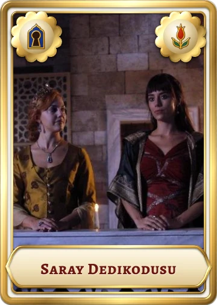<span class="why"><svg class="gl " viewBox="0 0 20 20" aria-hidden="true"><rect x="4.5" y="9" width="11" height="8" rx="1.5"/><path d="M7 9V6.5a3 3 0 016 0V9"/></svg>Harem kartı.<br>Bu kriz Divan.</span></div></div></div></div>
  <p class="note">Left to right: playable, selected (lifts 18 px across the shelf edge), playable only through your Kul, locked with the reason. Cards are the 120 px compact frame shown at 96. Long-press opens the detail view.</p>
  <h3>Buttons and the prompt</h3>
  <div class="slab ui"><div class="zl" style="display:flex;gap:10px;flex-wrap:wrap;align-items:center"><span class="b pri">Mühürle</span><span class="b">Pas geç</span><span class="b off">Atamayı ilan et <small>1/2</small></span><span class="b pri">İtiraz et <small>−1 Nüfuz</small></span></div>
    <div class="zp" style="display:flex;gap:10px;flex-wrap:wrap;align-items:center"><span class="b pri">Hükmü mühürle</span><span class="b">Sicile bak</span><span class="b off">Oyunu başlat <small>4/5</small></span></div></div>
  <p class="note">One component: 46 px high, 3 px radius. Primary is gold on lacquer and ink on paper. A disabled primary keeps its place and shows why (a count), so the layout never jumps.</p>
</section>

<section id="ekranlar">
  <h2>Every screen</h2>
  <p>One crisis, start to finish, then the sheets. Tap a screen to see it at full width.</p>
  <div class="grid2">
    <figure><div class="fr "><div class="ph ui th-split" lang="tr"><div class="full zp">
    <div class="frieze"></div>
    <div class="bd" style="display:block">
    <div style="position:absolute;left:10px;top:26px;display:grid;gap:4px">
      <b style="font:800 62px/1 var(--f-card);letter-spacing:.03em">Entrika</b>
      <p class="vo" style="font-size:19px">Sarayda bir hain var.</p></div>
    <div style="position:absolute;right:6px;top:22px;width:316px;display:grid;gap:9px;justify-items:end;text-align:right">
      <p class="h-step">Oda kodu</p>
      <div class="code"><i>4</i><i>7</i><i>1</i><i>2</i></div>
      <div class="nm-row" style="justify-content:flex-end;max-width:316px"><span class="pill plain">Kerem, kurucu</span><span class="pill plain">Defne</span><span class="pill plain">Can</span><span class="pill plain">Selin</span><span class="pill plain">Ayşe</span><span class="pill plain">Elif</span><span class="pill plain">Mert</span></div>
      <p class="wait" style="margin:0">7 oyuncu masada. 5 ile 8 arası oynanır.</p>
      <div class="bt"><span class="b">Kodu paylaş</span><span class="b pri">Oyunu başlat</span></div>
    </div></div><i class="home"></i></div><i class="island"></i></div></div><figcaption><span class="tag-pub">herkes görür</span><b>Lobby.</b> The cast is the title screen. Room code, who has joined, one start button for the host.</figcaption></figure>
    <figure><div class="fr "><div class="ph ui th-split" lang="tr"><div class="full zp"><div class="bd" style="grid-template-columns:236px 1fr;gap:40px;padding:22px 8px 0 26px">
    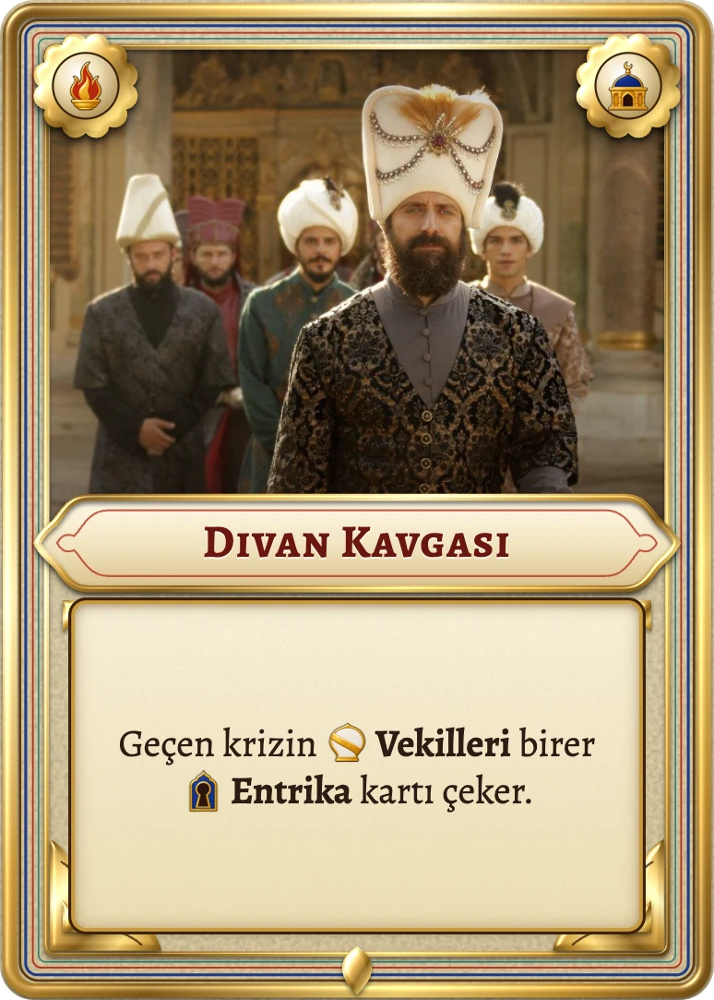
    <div style="display:grid;align-content:start;gap:12px;padding-top:18px">
      <p class="h-step">Kriz 4</p>
      <p class="h-big">Divan Kavgası</p>
      <div class="rule"></div>
      <p class="vo" style="font-size:19px;font-style:normal;display:flex;gap:9px;align-items:center"><span>Divan krizi. Bu krizde yalnız Divan kartları oynanır.</span></p>
      <p class="vo" style="font-size:19px">Geçen krizin Vekilleri birer Entrika kartı çeker.</p>
      <div class="nm-row"><span class="pill">Mert +1 kart</span><span class="pill">Defne +1 kart</span></div>
      <div class="wait" style="margin-top:22px">Kerem atamaya geçecek.</div>
    </div></div><i class="home"></i></div><i class="island"></i></div></div><figcaption><span class="tag-pub">herkes görür</span><b>Kriz.</b> The card turns on every phone at once. The field and who draws are restated at reading size.</figcaption></figure>
    <figure><div class="fr "><div class="ph ui th-split" lang="tr"><div class="pub zp"><div class="bd"><div class="mz">
  <div class="trk h"><span>Hizmet</span><span class="sl"><i class="on "></i><i class="on "></i><i class=" "></i><i class=" "></i></span></div>
  <div class="kz"><small>Kriz 4</small><b>Divan Kavgası</b><span class="chipf">Divan</span></div>
  <div class="r"><div class="trk x"><span class="sl"><i class="on "></i><i class=" "></i><i class=" "></i><i class=" "></i><i class=" end"></i></span><span>Hıyanet</span></div>
  <div class="nav"><span class="dot"><svg class="gl " viewBox="0 0 20 20" aria-hidden="true"><path d="M5 5h10M5 10h10M5 15h6"/></svg></span><span><svg class="gl " viewBox="0 0 20 20" aria-hidden="true"><path d="M3 6h7M15 6h2M3 14h2M10 14h7"/><circle cx="12.5" cy="6" r="2.2"/><circle cx="7.5" cy="14" r="2.2"/></svg></span></div></div>
</div><div class="ct" style="--slot:104px"><div class="st vk pick" style="--nw:90px;--nh:106px">
    <div class="nc"><svg viewBox="0 0 100 120" preserveAspectRatio="none" aria-hidden="true"><path d="M.5 119.5V46C.5 22 30 12 50 .6 70 12 99.5 22 99.5 46v73.5z"/></svg><div class="fg in"></div><div class="fg out"></div>
      <span class="of">Birinci Vekil</span>
      <span class="nf"><span class="star  "><svg viewBox="0 0 24 24"><polygon points="12.00,0.60 15.41,3.78 20.06,3.94 20.22,8.59 23.40,12.00 20.22,15.41 20.06,20.06 15.41,20.22 12.00,23.40 8.59,20.22 3.94,20.06 3.78,15.41 0.60,12.00 3.78,8.59 3.94,3.94 8.59,3.78" fill="#d2ab52" stroke="#6b4d0f" stroke-width="1"/></svg><span>1</span></span></span>
      <span class="kl "></span>
      
      </div>
    <div class="pl"><b>Ayşe</b><i>Hatice</i></div>
    <div class="ld"></div>
  </div><div class="st legal" style="--nw:90px;--nh:106px">
    <div class="nc"><svg viewBox="0 0 100 120" preserveAspectRatio="none" aria-hidden="true"><path d="M.5 119.5V46C.5 22 30 12 50 .6 70 12 99.5 22 99.5 46v73.5z"/></svg><div class="fg in"></div><div class="fg out"></div>
      
      <span class="nf"><span class="star zero "><svg viewBox="0 0 24 24"><polygon points="12.00,0.60 15.41,3.78 20.06,3.94 20.22,8.59 23.40,12.00 20.22,15.41 20.06,20.06 15.41,20.22 12.00,23.40 8.59,20.22 3.94,20.06 3.78,15.41 0.60,12.00 3.78,8.59 3.94,3.94 8.59,3.78" fill="#d2ab52" stroke="#6b4d0f" stroke-width="1"/></svg><span>0</span></span></span>
      <span class="kl down"></span>
      
      </div>
    <div class="pl"><b>Elif</b><i>Mihrimah</i></div>
    <div class="ld"></div>
  </div><div class="st legal" style="--nw:90px;--nh:106px">
    <div class="nc"><svg viewBox="0 0 100 120" preserveAspectRatio="none" aria-hidden="true"><path d="M.5 119.5V46C.5 22 30 12 50 .6 70 12 99.5 22 99.5 46v73.5z"/></svg><div class="fg in"></div><div class="fg out"></div>
      
      <span class="nf"><span class="star  "><svg viewBox="0 0 24 24"><polygon points="12.00,0.60 15.41,3.78 20.06,3.94 20.22,8.59 23.40,12.00 20.22,15.41 20.06,20.06 15.41,20.22 12.00,23.40 8.59,20.22 3.94,20.06 3.78,15.41 0.60,12.00 3.78,8.59 3.94,3.94 8.59,3.78" fill="#d2ab52" stroke="#6b4d0f" stroke-width="1"/></svg><span>2</span></span></span>
      <span class="kl "></span>
      
      </div>
    <div class="pl"><b>Mert</b><i>Rüstem</i></div>
    <div class="ld"></div>
  </div><div class="st sul you" style="--nw:104px;--nh:124px">
    <div class="nc"><svg viewBox="0 0 100 120" preserveAspectRatio="none" aria-hidden="true"><path d="M.5 119.5V46C.5 22 30 12 50 .6 70 12 99.5 22 99.5 46v73.5z"/></svg><div class="fg in"></div><div class="fg out"></div>
      
      
      
      
      </div>
    <div class="pl"><b>Kerem (sen)</b><i>Süleyman</i></div>
    <div class="ld"></div>
  </div><div class="st legal" style="--nw:90px;--nh:106px">
    <div class="nc"><svg viewBox="0 0 100 120" preserveAspectRatio="none" aria-hidden="true"><path d="M.5 119.5V46C.5 22 30 12 50 .6 70 12 99.5 22 99.5 46v73.5z"/></svg><div class="fg in"></div><div class="fg out"></div>
      
      <span class="nf"><span class="star  "><svg viewBox="0 0 24 24"><polygon points="12.00,0.60 15.41,3.78 20.06,3.94 20.22,8.59 23.40,12.00 20.22,15.41 20.06,20.06 15.41,20.22 12.00,23.40 8.59,20.22 3.94,20.06 3.78,15.41 0.60,12.00 3.78,8.59 3.94,3.94 8.59,3.78" fill="#d2ab52" stroke="#6b4d0f" stroke-width="1"/></svg><span>2</span></span></span>
      <span class="kl "></span>
      
      </div>
    <div class="pl"><b>Defne</b><i>Hürrem</i></div>
    <div class="ld"></div>
  </div><div class="st legal" style="--nw:90px;--nh:106px">
    <div class="nc"><svg viewBox="0 0 100 120" preserveAspectRatio="none" aria-hidden="true"><path d="M.5 119.5V46C.5 22 30 12 50 .6 70 12 99.5 22 99.5 46v73.5z"/></svg><div class="fg in"></div><div class="fg out"></div>
      
      <span class="nf"><span class="star  "><svg viewBox="0 0 24 24"><polygon points="12.00,0.60 15.41,3.78 20.06,3.94 20.22,8.59 23.40,12.00 20.22,15.41 20.06,20.06 15.41,20.22 12.00,23.40 8.59,20.22 3.94,20.06 3.78,15.41 0.60,12.00 3.78,8.59 3.94,3.94 8.59,3.78" fill="#d2ab52" stroke="#6b4d0f" stroke-width="1"/></svg><span>1</span></span></span>
      <span class="kl "></span>
      
      </div>
    <div class="pl"><b>Can</b><i>Pargalı</i></div>
    <div class="ld"></div>
  </div><div class="st legal" style="--nw:90px;--nh:106px">
    <div class="nc"><svg viewBox="0 0 100 120" preserveAspectRatio="none" aria-hidden="true"><path d="M.5 119.5V46C.5 22 30 12 50 .6 70 12 99.5 22 99.5 46v73.5z"/></svg><div class="fg in"></div><div class="fg out"></div>
      
      <span class="nf"><span class="star  "><svg viewBox="0 0 24 24"><polygon points="12.00,0.60 15.41,3.78 20.06,3.94 20.22,8.59 23.40,12.00 20.22,15.41 20.06,20.06 15.41,20.22 12.00,23.40 8.59,20.22 3.94,20.06 3.78,15.41 0.60,12.00 3.78,8.59 3.94,3.94 8.59,3.78" fill="#d2ab52" stroke="#6b4d0f" stroke-width="1"/></svg><span>1</span></span></span>
      <span class="kl "></span>
      
      </div>
    <div class="pl"><b>Selin</b><i>Mahidevran</i></div>
    <div class="ld"></div>
  </div></div></div></div><div class="shelf zl"><div class="bd">
    <div class="mine" style="grid-template-columns:1fr;width:176px"><ul class="pw">
      <li><i class="d"></i><b>Ferman</b><small>Tertip bitince bir Vekili değiştir</small></li>
      <li class="lock"><i class="d"></i><b>Soruşturma</b><small>2. Hıyanet'te açılır</small></li>
      <li class="lock"><i class="d"></i><b>Hazine Defteri</b><small>3. Hıyanet'te açılır</small></li></ul></div>
    <div class="slots">
      <div class="slot on"><i class="rn">I</i><div><small>Birinci Vekil</small><b>Ayşe</b><span>Kader'den üç kart çeker</span></div><svg class="gl " viewBox="0 0 20 20" aria-hidden="true"><path d="M5 5l10 10M15 5L5 15"/></svg></div>
      <div class="slot"><i class="rn">II</i><div><small>İkinci Vekil</small><b>Bir koltuğa dokun</b><span>İki karttan birini oynar</span></div></div>
    </div>
    <div class="pr" style="left:530px"><div class="stp"><span class="tk"><i class="done"></i><i class="now"></i><i class=""></i><i class=""></i><i class=""></i><i class=""></i></span>Atama</div>
      <p class="vo">İki Vekil ata. Kendini atayamazsın.</p>
      <div class="bt"><span class="b off">Atamayı ilan et <small>1/2</small></span></div></div></div><i class="home"></i></div><i class="island"></i></div></div><figcaption><span class="tag-prv">yalnız sen</span><b>Atama, Süleyman's phone.</b> He has no hand, so the shelf holds two appointment slots. Tap a seat to fill the next slot; the seat takes its lapis ground at once.</figcaption></figure>
    <figure><div class="fr "><div class="ph ui th-split" lang="tr"><div class="pub zp"><div class="bd"><div class="mz">
  <div class="trk h"><span>Hizmet</span><span class="sl"><i class="on "></i><i class="on "></i><i class=" "></i><i class=" "></i></span></div>
  <div class="kz"><small>Kriz 4</small><b>Divan Kavgası</b><span class="chipf">Divan</span></div>
  <div class="r"><div class="trk x"><span class="sl"><i class="on "></i><i class=" "></i><i class=" "></i><i class=" "></i><i class=" end"></i></span><span>Hıyanet</span></div>
  <div class="nav"><span class="dot"><svg class="gl " viewBox="0 0 20 20" aria-hidden="true"><path d="M5 5h10M5 10h10M5 15h6"/></svg></span><span><svg class="gl " viewBox="0 0 20 20" aria-hidden="true"><path d="M3 6h7M15 6h2M3 14h2M10 14h7"/><circle cx="12.5" cy="6" r="2.2"/><circle cx="7.5" cy="14" r="2.2"/></svg></span></div></div>
</div><div class="ct" style="--slot:104px"><div class="st vk legal" style="--nw:90px;--nh:106px">
    <div class="nc"><svg viewBox="0 0 100 120" preserveAspectRatio="none" aria-hidden="true"><path d="M.5 119.5V46C.5 22 30 12 50 .6 70 12 99.5 22 99.5 46v73.5z"/></svg><div class="fg in"></div><div class="fg out"></div>
      <span class="of">Birinci Vekil</span>
      <span class="nf"><span class="star  "><svg viewBox="0 0 24 24"><polygon points="12.00,0.60 15.41,3.78 20.06,3.94 20.22,8.59 23.40,12.00 20.22,15.41 20.06,20.06 15.41,20.22 12.00,23.40 8.59,20.22 3.94,20.06 3.78,15.41 0.60,12.00 3.78,8.59 3.94,3.94 8.59,3.78" fill="#d2ab52" stroke="#6b4d0f" stroke-width="1"/></svg><span>1</span></span></span>
      <span class="kl "></span>
      
      </div>
    <div class="pl"><b>Ayşe</b><i>Hatice</i></div>
    <div class="ld"><span class="ord ">4</span></div>
  </div><div class="st" style="--nw:90px;--nh:106px">
    <div class="nc"><svg viewBox="0 0 100 120" preserveAspectRatio="none" aria-hidden="true"><path d="M.5 119.5V46C.5 22 30 12 50 .6 70 12 99.5 22 99.5 46v73.5z"/></svg><div class="fg in"></div><div class="fg out"></div>
      
      <span class="nf"><span class="star zero "><svg viewBox="0 0 24 24"><polygon points="12.00,0.60 15.41,3.78 20.06,3.94 20.22,8.59 23.40,12.00 20.22,15.41 20.06,20.06 15.41,20.22 12.00,23.40 8.59,20.22 3.94,20.06 3.78,15.41 0.60,12.00 3.78,8.59 3.94,3.94 8.59,3.78" fill="#d2ab52" stroke="#6b4d0f" stroke-width="1"/></svg><span>0</span></span></span>
      <span class="kl down"></span>
      
      </div>
    <div class="pl"><b>Elif</b><i>Mihrimah</i></div>
    <div class="ld"><span class="ord ">5</span></div>
  </div><div class="st" style="--nw:90px;--nh:106px">
    <div class="nc"><svg viewBox="0 0 100 120" preserveAspectRatio="none" aria-hidden="true"><path d="M.5 119.5V46C.5 22 30 12 50 .6 70 12 99.5 22 99.5 46v73.5z"/></svg><div class="fg in"></div><div class="fg out"></div>
      
      <span class="nf"><span class="star  "><svg viewBox="0 0 24 24"><polygon points="12.00,0.60 15.41,3.78 20.06,3.94 20.22,8.59 23.40,12.00 20.22,15.41 20.06,20.06 15.41,20.22 12.00,23.40 8.59,20.22 3.94,20.06 3.78,15.41 0.60,12.00 3.78,8.59 3.94,3.94 8.59,3.78" fill="#d2ab52" stroke="#6b4d0f" stroke-width="1"/></svg><span>2</span></span></span>
      <span class="kl "></span>
      
      </div>
    <div class="pl"><b>Mert</b><i>Rüstem</i></div>
    <div class="ld"><span class="ord ">6</span></div>
  </div><div class="st sul" style="--nw:104px;--nh:124px">
    <div class="nc"><svg viewBox="0 0 100 120" preserveAspectRatio="none" aria-hidden="true"><path d="M.5 119.5V46C.5 22 30 12 50 .6 70 12 99.5 22 99.5 46v73.5z"/></svg><div class="fg in"></div><div class="fg out"></div>
      
      
      
      
      </div>
    <div class="pl"><b>Kerem</b><i>Süleyman</i></div>
    <div class="ld"></div>
  </div><div class="st vk legal" style="--nw:90px;--nh:106px">
    <div class="nc"><svg viewBox="0 0 100 120" preserveAspectRatio="none" aria-hidden="true"><path d="M.5 119.5V46C.5 22 30 12 50 .6 70 12 99.5 22 99.5 46v73.5z"/></svg><div class="fg in"></div><div class="fg out"></div>
      <span class="of">İkinci Vekil</span>
      <span class="nf"><span class="star  "><svg viewBox="0 0 24 24"><polygon points="12.00,0.60 15.41,3.78 20.06,3.94 20.22,8.59 23.40,12.00 20.22,15.41 20.06,20.06 15.41,20.22 12.00,23.40 8.59,20.22 3.94,20.06 3.78,15.41 0.60,12.00 3.78,8.59 3.94,3.94 8.59,3.78" fill="#d2ab52" stroke="#6b4d0f" stroke-width="1"/></svg><span>2</span></span></span>
      <span class="kl "></span>
      
      </div>
    <div class="pl"><b>Defne</b><i>Hürrem</i></div>
    <div class="ld"><span class="ord done">1</span></div>
  </div><div class="st" style="--nw:90px;--nh:106px">
    <div class="nc"><svg viewBox="0 0 100 120" preserveAspectRatio="none" aria-hidden="true"><path d="M.5 119.5V46C.5 22 30 12 50 .6 70 12 99.5 22 99.5 46v73.5z"/></svg><div class="fg in"></div><div class="fg out"></div>
      
      <span class="nf"><span class="star  "><svg viewBox="0 0 24 24"><polygon points="12.00,0.60 15.41,3.78 20.06,3.94 20.22,8.59 23.40,12.00 20.22,15.41 20.06,20.06 15.41,20.22 12.00,23.40 8.59,20.22 3.94,20.06 3.78,15.41 0.60,12.00 3.78,8.59 3.94,3.94 8.59,3.78" fill="#d2ab52" stroke="#6b4d0f" stroke-width="1"/></svg><span>1</span></span></span>
      <span class="kl "></span>
      
      </div>
    <div class="pl"><b>Can</b><i>Pargalı</i></div>
    <div class="ld"><span class="ord done">2</span></div>
  </div><div class="st you" style="--nw:90px;--nh:106px">
    <div class="nc"><svg viewBox="0 0 100 120" preserveAspectRatio="none" aria-hidden="true"><path d="M.5 119.5V46C.5 22 30 12 50 .6 70 12 99.5 22 99.5 46v73.5z"/></svg><div class="fg in"></div><div class="fg out"></div>
      
      <span class="nf"><span class="star  "><svg viewBox="0 0 24 24"><polygon points="12.00,0.60 15.41,3.78 20.06,3.94 20.22,8.59 23.40,12.00 20.22,15.41 20.06,20.06 15.41,20.22 12.00,23.40 8.59,20.22 3.94,20.06 3.78,15.41 0.60,12.00 3.78,8.59 3.94,3.94 8.59,3.78" fill="#d2ab52" stroke="#6b4d0f" stroke-width="1"/></svg><span>1</span></span></span>
      <span class="kl "></span>
      
      </div>
    <div class="pl"><b>Selin (sen)</b><i>Mahidevran</i></div>
    <div class="ld"><span class="ord now">3</span></div>
  </div></div></div></div><div class="shelf zl"><div class="bd"><div class="mine">
  <div class="tf"><small>Taraf, Hırs<br>basılı tut</small></div>
  <ul class="pw">
    <li class=""><i class="d"></i><b>İtiraz</b><small>temel güç, hazır</small></li>
    <li class="lock"><i class="d"></i><b>Sürgün</b><small>Hırs'la açılır</small></li>
    <li class=""><i class="d"></i><b>Malkoçoğlu</b><small>Mühür'e çevirir</small></li>
  </ul></div><div class="hand">
  <div class="hc  "></div>
  <div class="hc "></div>
  <div class="hc "><span class="via">Harem kartı<b>Malkoçoğlu ile Mühür</b></span></div>
</div>
    <div class="pr"><div class="stp"><span class="tk"><i class="done"></i><i class="now"></i><i class=""></i><i class=""></i><i class=""></i><i class=""></i></span>Atama, itirazlar</div>
      <p class="vo">İtiraz sırası sende. Bir Vekili değiştirtmek 1 Nüfuz.<small>İtiraz gücün hazır: bedelsiz olur.</small></p>
      <div class="bt"><span class="b">Geç</span><span class="b pri">İtiraz et <small>−1 Nüfuz</small></span></div></div></div><i class="home"></i></div><i class="island"></i></div></div><figcaption><span class="tag-prv">yalnız sen</span><b>İtiraz, your turn.</b> The order runs under the seats: done, now, to come. Tap the Vekil you object to, then the button.</figcaption></figure>
    <figure><div class="fr "><div class="ph ui th-split" lang="tr"><div class="pub zp"><div class="bd"><div class="mz">
  <div class="trk h"><span>Hizmet</span><span class="sl"><i class="on "></i><i class="on "></i><i class=" "></i><i class=" "></i></span></div>
  <div class="kz"><small>Kriz 4</small><b>Divan Kavgası</b><span class="chipf">Divan</span></div>
  <div class="r"><div class="trk x"><span class="sl"><i class="on "></i><i class=" "></i><i class=" "></i><i class=" "></i><i class=" end"></i></span><span>Hıyanet</span></div>
  <div class="nav"><span class="dot"><svg class="gl " viewBox="0 0 20 20" aria-hidden="true"><path d="M5 5h10M5 10h10M5 15h6"/></svg></span><span><svg class="gl " viewBox="0 0 20 20" aria-hidden="true"><path d="M3 6h7M15 6h2M3 14h2M10 14h7"/><circle cx="12.5" cy="6" r="2.2"/><circle cx="7.5" cy="14" r="2.2"/></svg></span></div></div>
</div><div class="ct" style="--slot:104px"><div class="st vk" style="--nw:90px;--nh:106px">
    <div class="nc"><svg viewBox="0 0 100 120" preserveAspectRatio="none" aria-hidden="true"><path d="M.5 119.5V46C.5 22 30 12 50 .6 70 12 99.5 22 99.5 46v73.5z"/></svg><div class="fg in"></div><div class="fg out"></div>
      <span class="of">Birinci Vekil</span>
      <span class="nf"><span class="star  "><svg viewBox="0 0 24 24"><polygon points="12.00,0.60 15.41,3.78 20.06,3.94 20.22,8.59 23.40,12.00 20.22,15.41 20.06,20.06 15.41,20.22 12.00,23.40 8.59,20.22 3.94,20.06 3.78,15.41 0.60,12.00 3.78,8.59 3.94,3.94 8.59,3.78" fill="#d2ab52" stroke="#6b4d0f" stroke-width="1"/></svg><span>1</span></span></span>
      <span class="kl "></span>
      <span class="rd"><svg class="gl " viewBox="0 0 20 20" aria-hidden="true"><path d="M4 10.5l4 4 8-9"/></svg></span>
      </div>
    <div class="pl"><b>Ayşe</b><i>Hatice</i></div>
    <div class="ld"><i class="cb own"></i></div>
  </div><div class="st" style="--nw:90px;--nh:106px">
    <div class="nc"><svg viewBox="0 0 100 120" preserveAspectRatio="none" aria-hidden="true"><path d="M.5 119.5V46C.5 22 30 12 50 .6 70 12 99.5 22 99.5 46v73.5z"/></svg><div class="fg in"></div><div class="fg out"></div>
      
      <span class="nf"><span class="star zero "><svg viewBox="0 0 24 24"><polygon points="12.00,0.60 15.41,3.78 20.06,3.94 20.22,8.59 23.40,12.00 20.22,15.41 20.06,20.06 15.41,20.22 12.00,23.40 8.59,20.22 3.94,20.06 3.78,15.41 0.60,12.00 3.78,8.59 3.94,3.94 8.59,3.78" fill="#d2ab52" stroke="#6b4d0f" stroke-width="1"/></svg><span>0</span></span></span>
      <span class="kl down"></span>
      <span class="rd"><svg class="gl " viewBox="0 0 20 20" aria-hidden="true"><path d="M4 10.5l4 4 8-9"/></svg></span>
      </div>
    <div class="pl"><b>Elif</b><i>Mihrimah</i></div>
    <div class="ld"></div>
  </div><div class="st" style="--nw:90px;--nh:106px">
    <div class="nc"><svg viewBox="0 0 100 120" preserveAspectRatio="none" aria-hidden="true"><path d="M.5 119.5V46C.5 22 30 12 50 .6 70 12 99.5 22 99.5 46v73.5z"/></svg><div class="fg in"></div><div class="fg out"></div>
      
      <span class="nf"><span class="star  "><svg viewBox="0 0 24 24"><polygon points="12.00,0.60 15.41,3.78 20.06,3.94 20.22,8.59 23.40,12.00 20.22,15.41 20.06,20.06 15.41,20.22 12.00,23.40 8.59,20.22 3.94,20.06 3.78,15.41 0.60,12.00 3.78,8.59 3.94,3.94 8.59,3.78" fill="#d2ab52" stroke="#6b4d0f" stroke-width="1"/></svg><span>2</span></span></span>
      <span class="kl "></span>
      
      </div>
    <div class="pl"><b>Mert</b><i>Rüstem</i></div>
    <div class="ld"></div>
  </div><div class="st sul" style="--nw:104px;--nh:124px">
    <div class="nc"><svg viewBox="0 0 100 120" preserveAspectRatio="none" aria-hidden="true"><path d="M.5 119.5V46C.5 22 30 12 50 .6 70 12 99.5 22 99.5 46v73.5z"/></svg><div class="fg in"></div><div class="fg out"></div>
      
      
      
      
      </div>
    <div class="pl"><b>Kerem</b><i>Süleyman</i></div>
    <div class="ld"></div>
  </div><div class="st vk" style="--nw:90px;--nh:106px">
    <div class="nc"><svg viewBox="0 0 100 120" preserveAspectRatio="none" aria-hidden="true"><path d="M.5 119.5V46C.5 22 30 12 50 .6 70 12 99.5 22 99.5 46v73.5z"/></svg><div class="fg in"></div><div class="fg out"></div>
      <span class="of">İkinci Vekil</span>
      <span class="nf"><span class="star  "><svg viewBox="0 0 24 24"><polygon points="12.00,0.60 15.41,3.78 20.06,3.94 20.22,8.59 23.40,12.00 20.22,15.41 20.06,20.06 15.41,20.22 12.00,23.40 8.59,20.22 3.94,20.06 3.78,15.41 0.60,12.00 3.78,8.59 3.94,3.94 8.59,3.78" fill="#d2ab52" stroke="#6b4d0f" stroke-width="1"/></svg><span>2</span></span></span>
      <span class="kl "></span>
      <span class="rd"><svg class="gl " viewBox="0 0 20 20" aria-hidden="true"><path d="M4 10.5l4 4 8-9"/></svg></span>
      </div>
    <div class="pl"><b>Defne</b><i>Hürrem</i></div>
    <div class="ld"></div>
  </div><div class="st" style="--nw:90px;--nh:106px">
    <div class="nc"><svg viewBox="0 0 100 120" preserveAspectRatio="none" aria-hidden="true"><path d="M.5 119.5V46C.5 22 30 12 50 .6 70 12 99.5 22 99.5 46v73.5z"/></svg><div class="fg in"></div><div class="fg out"></div>
      
      <span class="nf"><span class="star  "><svg viewBox="0 0 24 24"><polygon points="12.00,0.60 15.41,3.78 20.06,3.94 20.22,8.59 23.40,12.00 20.22,15.41 20.06,20.06 15.41,20.22 12.00,23.40 8.59,20.22 3.94,20.06 3.78,15.41 0.60,12.00 3.78,8.59 3.94,3.94 8.59,3.78" fill="#d2ab52" stroke="#6b4d0f" stroke-width="1"/></svg><span>1</span></span></span>
      <span class="kl "></span>
      <span class="rd"><svg class="gl " viewBox="0 0 20 20" aria-hidden="true"><path d="M4 10.5l4 4 8-9"/></svg></span>
      </div>
    <div class="pl"><b>Can</b><i>Pargalı</i></div>
    <div class="ld"></div>
  </div><div class="st you" style="--nw:90px;--nh:106px">
    <div class="nc"><svg viewBox="0 0 100 120" preserveAspectRatio="none" aria-hidden="true"><path d="M.5 119.5V46C.5 22 30 12 50 .6 70 12 99.5 22 99.5 46v73.5z"/></svg><div class="fg in"></div><div class="fg out"></div>
      
      <span class="nf"><span class="star  "><svg viewBox="0 0 24 24"><polygon points="12.00,0.60 15.41,3.78 20.06,3.94 20.22,8.59 23.40,12.00 20.22,15.41 20.06,20.06 15.41,20.22 12.00,23.40 8.59,20.22 3.94,20.06 3.78,15.41 0.60,12.00 3.78,8.59 3.94,3.94 8.59,3.78" fill="#d2ab52" stroke="#6b4d0f" stroke-width="1"/></svg><span>1</span></span></span>
      <span class="kl "></span>
      <span class="rd"><svg class="gl " viewBox="0 0 20 20" aria-hidden="true"><path d="M4 10.5l4 4 8-9"/></svg></span>
      </div>
    <div class="pl"><b>Selin (sen)</b><i>Mahidevran</i></div>
    <div class="ld"></div>
  </div></div></div></div><div class="shelf zl"><div class="bd"><div class="mine">
  <div class="tf"><small>Taraf, Hırs<br>basılı tut</small></div>
  <ul class="pw">
    <li class=""><i class="d"></i><b>İtiraz</b><small>temel güç, hazır</small></li>
    <li class="lock"><i class="d"></i><b>Sürgün</b><small>Hırs'la açılır</small></li>
    <li class=""><i class="d"></i><b>Malkoçoğlu</b><small>Mühür'e çevirir</small></li>
  </ul></div><div class="hand">
  <div class="hc  "></div>
  <div class="hc "></div>
  <div class="hc off"></div>
</div>
    <div class="pr"><div class="stp"><span class="tk"><i class="done"></i><i class="done"></i><i class="now"></i><i class=""></i><i class=""></i><i class=""></i></span>Tertip, 1. dalga</div>
      <p class="vo">Kartın mühürlendi. Açılışa kadar kimse göremez.</p>
      <div class="wait"><span class="dots"><i class="on"></i><i class="on"></i><i class="on"></i><i class="on"></i><i class="on"></i><i></i></span>5/6 hazır. Mert bekleniyor.</div>
      <div class="bt"><span class="b">Kartı geri al</span></div></div></div><i class="home"></i></div><i class="island"></i></div></div><figcaption><span class="tag-prv">yalnız sen</span><b>Tertip, sealed.</b> Your card lies face down in front of Ayşe; the gold outline shows on your phone only. Others see a red seal on your seat.</figcaption></figure>
    <figure><div class="fr "><div class="ph ui th-split" lang="tr"><div class="full zp"><div class="bd"><div class="mz">
  <div class="trk h"><span>Hizmet</span><span class="sl"><i class="on "></i><i class="on "></i><i class=" "></i><i class=" "></i></span></div>
  <div class="kz"><small>Kriz 4</small><b>Divan Kavgası</b><span class="chipf">Divan</span></div>
  <div class="r"><div class="trk x"><span class="sl"><i class="on "></i><i class=" "></i><i class=" "></i><i class=" "></i><i class=" end"></i></span><span>Hıyanet</span></div>
  <div class="nav"><span class="dot"><svg class="gl " viewBox="0 0 20 20" aria-hidden="true"><path d="M5 5h10M5 10h10M5 15h6"/></svg></span><span><svg class="gl " viewBox="0 0 20 20" aria-hidden="true"><path d="M3 6h7M15 6h2M3 14h2M10 14h7"/><circle cx="12.5" cy="6" r="2.2"/><circle cx="7.5" cy="14" r="2.2"/></svg></span></div></div>
</div><div class="ct" style="--slot:104px"><div class="st vk" style="--nw:90px;--nh:106px">
    <div class="nc"><svg viewBox="0 0 100 120" preserveAspectRatio="none" aria-hidden="true"><path d="M.5 119.5V46C.5 22 30 12 50 .6 70 12 99.5 22 99.5 46v73.5z"/></svg><div class="fg in"></div><div class="fg out"></div>
      <span class="of">Birinci Vekil</span>
      <span class="nf"><span class="star  "><svg viewBox="0 0 24 24"><polygon points="12.00,0.60 15.41,3.78 20.06,3.94 20.22,8.59 23.40,12.00 20.22,15.41 20.06,20.06 15.41,20.22 12.00,23.40 8.59,20.22 3.94,20.06 3.78,15.41 0.60,12.00 3.78,8.59 3.94,3.94 8.59,3.78" fill="#d2ab52" stroke="#6b4d0f" stroke-width="1"/></svg><span>1</span></span></span>
      <span class="kl "></span>
      
      </div>
    <div class="pl"><b>Ayşe</b><i>Hatice</i></div>
    <div class="ld"></div>
  </div><div class="st dim" style="--nw:90px;--nh:106px">
    <div class="nc"><svg viewBox="0 0 100 120" preserveAspectRatio="none" aria-hidden="true"><path d="M.5 119.5V46C.5 22 30 12 50 .6 70 12 99.5 22 99.5 46v73.5z"/></svg><div class="fg in"></div><div class="fg out"></div>
      
      <span class="nf"><span class="star zero "><svg viewBox="0 0 24 24"><polygon points="12.00,0.60 15.41,3.78 20.06,3.94 20.22,8.59 23.40,12.00 20.22,15.41 20.06,20.06 15.41,20.22 12.00,23.40 8.59,20.22 3.94,20.06 3.78,15.41 0.60,12.00 3.78,8.59 3.94,3.94 8.59,3.78" fill="#d2ab52" stroke="#6b4d0f" stroke-width="1"/></svg><span>0</span></span></span>
      <span class="kl down"></span>
      
      </div>
    <div class="pl"><b>Elif</b><i>Mihrimah</i></div>
    <div class="ld"></div>
  </div><div class="st" style="--nw:90px;--nh:106px">
    <div class="nc"><svg viewBox="0 0 100 120" preserveAspectRatio="none" aria-hidden="true"><path d="M.5 119.5V46C.5 22 30 12 50 .6 70 12 99.5 22 99.5 46v73.5z"/></svg><div class="fg in"></div><div class="fg out"></div>
      
      <span class="nf"><span class="star  "><svg viewBox="0 0 24 24"><polygon points="12.00,0.60 15.41,3.78 20.06,3.94 20.22,8.59 23.40,12.00 20.22,15.41 20.06,20.06 15.41,20.22 12.00,23.40 8.59,20.22 3.94,20.06 3.78,15.41 0.60,12.00 3.78,8.59 3.94,3.94 8.59,3.78" fill="#d2ab52" stroke="#6b4d0f" stroke-width="1"/></svg><span>2</span></span></span>
      <span class="kl "></span>
      
      </div>
    <div class="pl"><b>Mert</b><i>Rüstem</i></div>
    <div class="ld"></div>
  </div><div class="st sul dim" style="--nw:104px;--nh:124px">
    <div class="nc"><svg viewBox="0 0 100 120" preserveAspectRatio="none" aria-hidden="true"><path d="M.5 119.5V46C.5 22 30 12 50 .6 70 12 99.5 22 99.5 46v73.5z"/></svg><div class="fg in"></div><div class="fg out"></div>
      
      
      
      
      </div>
    <div class="pl"><b>Kerem</b><i>Süleyman</i></div>
    <div class="ld"></div>
  </div><div class="st vk dim" style="--nw:90px;--nh:106px">
    <div class="nc"><svg viewBox="0 0 100 120" preserveAspectRatio="none" aria-hidden="true"><path d="M.5 119.5V46C.5 22 30 12 50 .6 70 12 99.5 22 99.5 46v73.5z"/></svg><div class="fg in"></div><div class="fg out"></div>
      <span class="of">İkinci Vekil</span>
      <span class="nf"><span class="star  "><svg viewBox="0 0 24 24"><polygon points="12.00,0.60 15.41,3.78 20.06,3.94 20.22,8.59 23.40,12.00 20.22,15.41 20.06,20.06 15.41,20.22 12.00,23.40 8.59,20.22 3.94,20.06 3.78,15.41 0.60,12.00 3.78,8.59 3.94,3.94 8.59,3.78" fill="#d2ab52" stroke="#6b4d0f" stroke-width="1"/></svg><span>2</span></span></span>
      <span class="kl "></span>
      
      </div>
    <div class="pl"><b>Defne</b><i>Hürrem</i></div>
    <div class="ld"></div>
  </div><div class="st dim" style="--nw:90px;--nh:106px">
    <div class="nc"><svg viewBox="0 0 100 120" preserveAspectRatio="none" aria-hidden="true"><path d="M.5 119.5V46C.5 22 30 12 50 .6 70 12 99.5 22 99.5 46v73.5z"/></svg><div class="fg in"></div><div class="fg out"></div>
      
      <span class="nf"><span class="star  "><svg viewBox="0 0 24 24"><polygon points="12.00,0.60 15.41,3.78 20.06,3.94 20.22,8.59 23.40,12.00 20.22,15.41 20.06,20.06 15.41,20.22 12.00,23.40 8.59,20.22 3.94,20.06 3.78,15.41 0.60,12.00 3.78,8.59 3.94,3.94 8.59,3.78" fill="#d2ab52" stroke="#6b4d0f" stroke-width="1"/></svg><span>1</span></span></span>
      <span class="kl "></span>
      
      </div>
    <div class="pl"><b>Can</b><i>Pargalı</i></div>
    <div class="ld"></div>
  </div><div class="st you dim" style="--nw:90px;--nh:106px">
    <div class="nc"><svg viewBox="0 0 100 120" preserveAspectRatio="none" aria-hidden="true"><path d="M.5 119.5V46C.5 22 30 12 50 .6 70 12 99.5 22 99.5 46v73.5z"/></svg><div class="fg in"></div><div class="fg out"></div>
      
      <span class="nf"><span class="star  "><svg viewBox="0 0 24 24"><polygon points="12.00,0.60 15.41,3.78 20.06,3.94 20.22,8.59 23.40,12.00 20.22,15.41 20.06,20.06 15.41,20.22 12.00,23.40 8.59,20.22 3.94,20.06 3.78,15.41 0.60,12.00 3.78,8.59 3.94,3.94 8.59,3.78" fill="#d2ab52" stroke="#6b4d0f" stroke-width="1"/></svg><span>1</span></span></span>
      <span class="kl "></span>
      
      </div>
    <div class="pl"><b>Selin (sen)</b><i>Mahidevran</i></div>
    <div class="ld"></div>
  </div></div>
    <div class="rv" style="left:2px"><span class="tg">kriz boyu kalır</span></div>
    <div class="rv void" style="left:98px"><span class="tg">boşa gitti</span></div>
    <div class="rv" style="left:223px">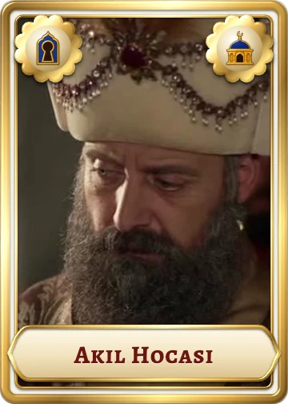<span class="tg">kriz boyu kalır</span></div>
    <div class="nar"><div class="stp"><span class="tk"><i class="done"></i><i class="done"></i><i class="now"></i><i class=""></i><i class=""></i><i class=""></i></span>Tertip, 1. dalga açıldı</div>
      <p class="vo" style="font-size:19px"><b>Mühür</b> Ayşe'yi koltuğunda tutar. Aynı dalgadaki <b>Valide'nin Buyruğu</b> boşa gider.</p>
      <p class="vo" style="font-size:15px;color:var(--fg2)">Üç kart açıldı. Kimin oynadığı gizli kalır.</p>
      <div class="wait" style="margin-top:auto"><span class="dots"><i class="on"></i><i class="on"></i><i></i></span>Sırada: Mert'in önündeki Akıl Hocası</div></div>
  </div><i class="home"></i></div><i class="island"></i></div></div><figcaption><span class="tag-pub">herkes görür</span><b>Açılış.</b> The shelf drops away: a reveal is public, so the whole screen is paper. Cards open under the seats they were played on.</figcaption></figure>
    <figure><div class="fr "><div class="ph ui th-split" lang="tr"><div class="full zl"><div class="bd" style="grid-template-columns:232px 1fr;gap:26px;padding:26px 0 0 4px">
    <div style="display:grid;align-content:start;gap:11px">
      <div class="stp"><span class="tk"><i class="done"></i><i class="done"></i><i class="done"></i><i class="now"></i><i class=""></i><i class=""></i></span>Kader</div>
      <p class="h-mid">Birini at, ikisini Defne'ye gönder.</p>
      <p class="vo" style="font-size:15px">Sadıksın: elinde Hıyanet varken Hizmet'i atamazsın.</p>
      <p class="vo" style="font-size:15px;color:var(--fg2)">Bu adımda kimse konuşmaz.</p>
      <div class="bt" style="justify-content:flex-start;margin-top:14px"><span class="b pri">İkisini gönder</span></div>
    </div>
    <div class="kd">
      <div class="k lockd">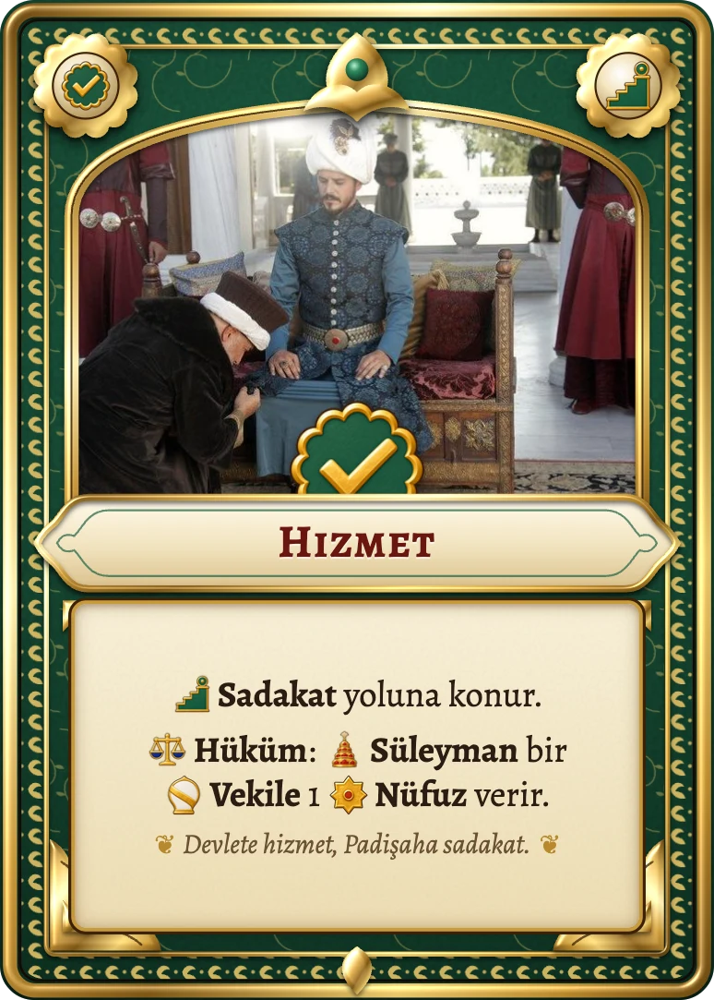<span class="kt"><svg class="gl " viewBox="0 0 20 20" aria-hidden="true"><rect x="4.5" y="9" width="11" height="8" rx="1.5"/><path d="M7 9V6.5a3 3 0 016 0V9"/></svg>Atılamaz</span></div>
      <div class="k">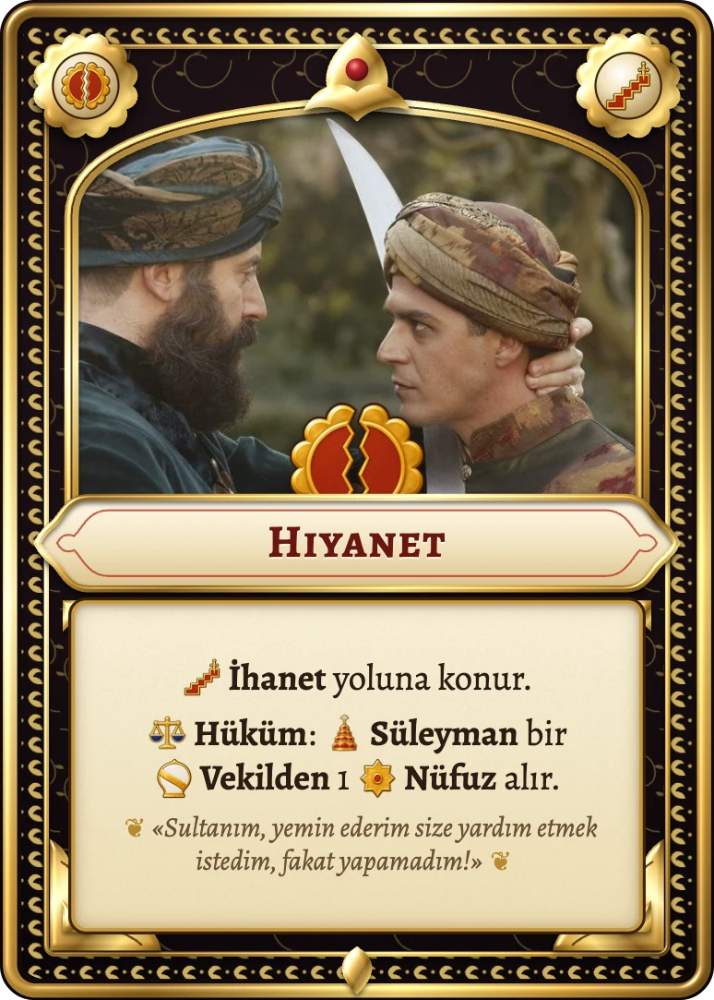<span class="kt go">Gidecek</span></div>
      <div class="k toss"><span class="kt out">Atılacak</span></div>
    </div></div><i class="home"></i></div><i class="island"></i></div></div><figcaption><span class="tag-prv">yalnız sen</span><b>Kader, the Birinci Vekil.</b> The whole screen is lacquer. A Sadık player's forbidden discard is locked and says so.</figcaption></figure>
    <figure><div class="fr "><div class="ph ui th-split" lang="tr"><div class="full zp"><div class="bd" style="grid-template-columns:212px 1fr;gap:38px;padding:24px 4px 0 30px">
    
    <div style="display:grid;align-content:start;gap:10px;padding-top:6px">
      <p class="h-step">Sonuç, kriz 4</p>
      <p class="h-big" style="color:var(--s-al)">Hıyanet</p>
      <p class="vo" style="font-size:16px">Ayşe üç kart çekti, Defne birini oynadı.</p>
      <div class="bigtrk">
        <div class="row h"><span>Hizmet</span><span class="bs"><i class="on  "></i><i class="on  "></i><i class="  "></i><i class="  "></i></span><small>2/4</small></div>
        <div class="row x"><span>Hıyanet</span><span class="bs"><i class="on  "></i><i class="on new "></i><i class="  "></i><i class="  "></i><i class="  end"></i></span><small>2/5</small></div>
      </div>
      <div class="rule"></div>
      <p class="vo" style="font-size:16px;font-style:normal"><b>Soruşturma açıldı.</b> Süleyman bir müfettiş seçer; müfettiş bir oyuncunun Tarafına gizlice bakar.</p>
      <div class="wait">Kerem müfettişi seçiyor.</div>
    </div></div><i class="home"></i></div><i class="island"></i></div></div><figcaption><span class="tag-pub">herkes görür</span><b>Sonuç.</b> The tracks at reading size, the new space ringed in gold, the power it opened in one sentence.</figcaption></figure>
    <figure><div class="fr "><div class="ph ui th-split" lang="tr"><div class="full zp"><div class="bd" style="grid-template-columns:296px 1fr;gap:10px;padding:30px 0 0 14px">
    <div style="display:grid;align-content:start;gap:11px">
      
      <p class="h-step">Hüküm</p>
      <p class="h-mid">Bir Vekilden 1 Nüfuz al.</p>
      <p class="vo" style="font-size:15px">Hıyanet oynandı. Kaybeden bir Entrika kartı çeker.</p>
      <div class="bt" style="justify-content:flex-start;margin-top:12px"><span class="b pri">Hükmü mühürle</span></div>
    </div>
    <div style="display:flex;gap:26px;justify-content:center;align-items:flex-start;padding-top:36px"><div class="st vk " style="--nw:150px;--nh:182px;width:176px;height:250px"><div class="nc" style="bottom:52px"><svg viewBox="0 0 100 120" preserveAspectRatio="none" aria-hidden="true"><path d="M.5 119.5V46C.5 22 30 12 50 .6 70 12 99.5 22 99.5 46v73.5z"/></svg><div class="fg in"></div><div class="fg out"></div><span class="of">Birinci Vekil</span></div><div class="pl" style="bottom:10px"><b style="font-size:16px">Ayşe</b><i>Hatice, 1 Nüfuz</i></div></div><div class="st vk pick" style="--nw:150px;--nh:182px;width:176px;height:250px"><div class="nc" style="bottom:52px"><svg viewBox="0 0 100 120" preserveAspectRatio="none" aria-hidden="true"><path d="M.5 119.5V46C.5 22 30 12 50 .6 70 12 99.5 22 99.5 46v73.5z"/></svg><div class="fg in"></div><div class="fg out"></div><span class="of">İkinci Vekil</span><span class="nf" style="left:auto;right:-16px;bottom:auto;top:34px"><span class="star  " style="width:40px;height:40px;font-size:21px"><svg viewBox="0 0 24 24"><polygon points="12.00,0.60 15.41,3.78 20.06,3.94 20.22,8.59 23.40,12.00 20.22,15.41 20.06,20.06 15.41,20.22 12.00,23.40 8.59,20.22 3.94,20.06 3.78,15.41 0.60,12.00 3.78,8.59 3.94,3.94 8.59,3.78" fill="#d2ab52" stroke="#6b4d0f" stroke-width="1"/></svg><span>−1</span></span></span></div><div class="pl" style="bottom:10px"><b style="font-size:16px">Defne</b><i>Hürrem, 2 Nüfuz</i></div></div></div>
  </div><i class="home"></i></div><i class="island"></i></div></div><figcaption><span class="tag-pub">herkes görür</span><b>Hüküm, Süleyman's phone.</b> Two Vekils, one tap, one seal. Other phones see the same page with the result.</figcaption></figure>
    <figure><div class="fr "><div class="ph ui th-split" lang="tr"><div class="full zp"><div class="bd" style="display:block">
    <div style="position:absolute;left:8px;top:20px;display:grid;gap:5px">
      <p class="h-step">Oyun bitti, kriz 9</p>
      <p class="h-big" style="color:var(--s-al)">Hainler kazandı</p>
      <p class="vo" style="font-size:17px">Beşinci Hıyanet oynandı. Süleyman öldü.</p></div>
    <div style="position:absolute;right:4px;top:26px;display:grid;gap:8px;justify-items:end">
      <div class="trk h"><span>Hizmet</span><span class="sl"><i class="on "></i><i class="on "></i><i class="on "></i><i class=" "></i></span><small>3/4</small></div>
      <div class="trk x"><span>Hıyanet</span><span class="sl"><i class="on "></i><i class="on "></i><i class="on "></i><i class="on "></i><i class="on "></i></span><small>5/5</small></div></div>
    <div class="ct" style="--slot:104px;top:132px"><div class="st band dim" style="--nw:90px;--nh:106px">
    <div class="nc"><svg viewBox="0 0 100 120" preserveAspectRatio="none" aria-hidden="true"><path d="M.5 119.5V46C.5 22 30 12 50 .6 70 12 99.5 22 99.5 46v73.5z"/></svg><div class="fg in"></div><div class="fg out"></div>
      <span class="of" style="background:var(--mal)">Sadık</span>
      <span class="nf"><span class="star  "><svg viewBox="0 0 24 24"><polygon points="12.00,0.60 15.41,3.78 20.06,3.94 20.22,8.59 23.40,12.00 20.22,15.41 20.06,20.06 15.41,20.22 12.00,23.40 8.59,20.22 3.94,20.06 3.78,15.41 0.60,12.00 3.78,8.59 3.94,3.94 8.59,3.78" fill="#d2ab52" stroke="#6b4d0f" stroke-width="1"/></svg><span>1</span></span></span>
      
      
      </div>
    <div class="pl"><b>Ayşe</b><i>Hatice</i></div>
    <div class="ld"></div>
  </div><div class="st band dim" style="--nw:90px;--nh:106px">
    <div class="nc"><svg viewBox="0 0 100 120" preserveAspectRatio="none" aria-hidden="true"><path d="M.5 119.5V46C.5 22 30 12 50 .6 70 12 99.5 22 99.5 46v73.5z"/></svg><div class="fg in"></div><div class="fg out"></div>
      <span class="of" style="background:var(--mal)">Sadık</span>
      <span class="nf"><span class="star zero "><svg viewBox="0 0 24 24"><polygon points="12.00,0.60 15.41,3.78 20.06,3.94 20.22,8.59 23.40,12.00 20.22,15.41 20.06,20.06 15.41,20.22 12.00,23.40 8.59,20.22 3.94,20.06 3.78,15.41 0.60,12.00 3.78,8.59 3.94,3.94 8.59,3.78" fill="#d2ab52" stroke="#6b4d0f" stroke-width="1"/></svg><span>0</span></span></span>
      
      
      </div>
    <div class="pl"><b>Elif</b><i>Mihrimah</i></div>
    <div class="ld"></div>
  </div><div class="st band" style="--nw:90px;--nh:106px;--g:var(--gold)">
    <div class="nc" style="--ground:var(--gold);--edge:#7a5a14"><svg viewBox="0 0 100 120" preserveAspectRatio="none" aria-hidden="true"><path d="M.5 119.5V46C.5 22 30 12 50 .6 70 12 99.5 22 99.5 46v73.5z"/></svg><div class="fg in"></div><div class="fg out"></div>
      <span class="of" style="background:var(--al)">Hain</span>
      <span class="nf"><span class="star  "><svg viewBox="0 0 24 24"><polygon points="12.00,0.60 15.41,3.78 20.06,3.94 20.22,8.59 23.40,12.00 20.22,15.41 20.06,20.06 15.41,20.22 12.00,23.40 8.59,20.22 3.94,20.06 3.78,15.41 0.60,12.00 3.78,8.59 3.94,3.94 8.59,3.78" fill="#d2ab52" stroke="#6b4d0f" stroke-width="1"/></svg><span>3</span></span></span>
      
      
      </div>
    <div class="pl"><b>Mert</b><i>Rüstem</i></div>
    <div class="ld"></div>
  </div><div class="st sul dim" style="--nw:104px;--nh:124px">
    <div class="nc"><svg viewBox="0 0 100 120" preserveAspectRatio="none" aria-hidden="true"><path d="M.5 119.5V46C.5 22 30 12 50 .6 70 12 99.5 22 99.5 46v73.5z"/></svg><div class="fg in"></div><div class="fg out"></div>
      
      
      
      
      </div>
    <div class="pl"><b>Kerem</b><i>Süleyman</i></div>
    <div class="ld"></div>
  </div><div class="st band" style="--nw:90px;--nh:106px">
    <div class="nc"><svg viewBox="0 0 100 120" preserveAspectRatio="none" aria-hidden="true"><path d="M.5 119.5V46C.5 22 30 12 50 .6 70 12 99.5 22 99.5 46v73.5z"/></svg><div class="fg in"></div><div class="fg out"></div>
      <span class="of" style="background:var(--al)">Hain</span>
      <span class="nf"><span class="star  "><svg viewBox="0 0 24 24"><polygon points="12.00,0.60 15.41,3.78 20.06,3.94 20.22,8.59 23.40,12.00 20.22,15.41 20.06,20.06 15.41,20.22 12.00,23.40 8.59,20.22 3.94,20.06 3.78,15.41 0.60,12.00 3.78,8.59 3.94,3.94 8.59,3.78" fill="#d2ab52" stroke="#6b4d0f" stroke-width="1"/></svg><span>2</span></span></span>
      
      
      </div>
    <div class="pl"><b>Defne</b><i>Hürrem</i></div>
    <div class="ld"></div>
  </div><div class="st band dim" style="--nw:90px;--nh:106px">
    <div class="nc"><svg viewBox="0 0 100 120" preserveAspectRatio="none" aria-hidden="true"><path d="M.5 119.5V46C.5 22 30 12 50 .6 70 12 99.5 22 99.5 46v73.5z"/></svg><div class="fg in"></div><div class="fg out"></div>
      <span class="of" style="background:var(--mal)">Sadık</span>
      <span class="nf"><span class="star  "><svg viewBox="0 0 24 24"><polygon points="12.00,0.60 15.41,3.78 20.06,3.94 20.22,8.59 23.40,12.00 20.22,15.41 20.06,20.06 15.41,20.22 12.00,23.40 8.59,20.22 3.94,20.06 3.78,15.41 0.60,12.00 3.78,8.59 3.94,3.94 8.59,3.78" fill="#d2ab52" stroke="#6b4d0f" stroke-width="1"/></svg><span>2</span></span></span>
      
      
      </div>
    <div class="pl"><b>Can</b><i>Pargalı</i></div>
    <div class="ld"></div>
  </div><div class="st band you dim" style="--nw:90px;--nh:106px">
    <div class="nc"><svg viewBox="0 0 100 120" preserveAspectRatio="none" aria-hidden="true"><path d="M.5 119.5V46C.5 22 30 12 50 .6 70 12 99.5 22 99.5 46v73.5z"/></svg><div class="fg in"></div><div class="fg out"></div>
      <span class="of" style="background:var(--mal)">Sadık</span>
      <span class="nf"><span class="star  "><svg viewBox="0 0 24 24"><polygon points="12.00,0.60 15.41,3.78 20.06,3.94 20.22,8.59 23.40,12.00 20.22,15.41 20.06,20.06 15.41,20.22 12.00,23.40 8.59,20.22 3.94,20.06 3.78,15.41 0.60,12.00 3.78,8.59 3.94,3.94 8.59,3.78" fill="#d2ab52" stroke="#6b4d0f" stroke-width="1"/></svg><span>1</span></span></span>
      
      
      </div>
    <div class="pl"><b>Selin (sen)</b><i>Mahidevran</i></div>
    <div class="ld"></div>
  </div></div>
    <div style="position:absolute;left:8px;right:4px;top:324px;display:flex;align-items:center;gap:10px">
      <p class="vo" style="font-size:16px;font-style:normal;margin-right:auto"><b>Galip: Mert.</b> Kazanan tarafta en çok Nüfuz onda.</p>
      <span class="b">Sicile bak</span><span class="b pri">Yeni oyun</span></div>
  </div><i class="home"></i></div><i class="island"></i></div></div><figcaption><span class="tag-pub">herkes görür</span><b>Game end.</b> The winning side stays in colour; the overall winner stands on gold.</figcaption></figure>
    <figure><div class="fr "><div class="ph ui th-split" lang="tr"><div class="full zl"><div class="bd" style="grid-template-columns:1fr auto auto;gap:22px;padding:26px 16px 0 4px;align-items:start">
    <div style="display:grid;align-content:start;gap:11px;padding-top:8px">
      <p class="h-step" style="display:flex;gap:6px;align-items:center"><svg class="gl " viewBox="0 0 20 20" aria-hidden="true"><path d="M2 10s3-5 8-5 8 5 8 5-3 5-8 5-8-5-8-5z"/><circle cx="10" cy="10" r="2.2"/></svg>Yalnız sen görürsün</p>
      <p class="h-mid">Sadıksın.</p>
      <p class="vo" style="font-size:17px">«Mustafa'yı ancak Sultan'ın sevgisi korur.»</p>
      <p class="vo" style="font-size:15px;font-style:normal"><b>Hırsın: Kulak Misafiri.</b> Saray Dedikodusu, Mühürlü Evrak ya da Teftiş kullan; Sürgün gücün açılır.</p>
      <p class="wait" style="margin:10px 0 0"><svg class="gl " viewBox="0 0 20 20" aria-hidden="true"><circle cx="10" cy="10" r="2.6"/><circle cx="10" cy="10" r="7" stroke-dasharray="2.5 3"/></svg>Parmağını kaldırınca kapanır.</p>
    </div>
    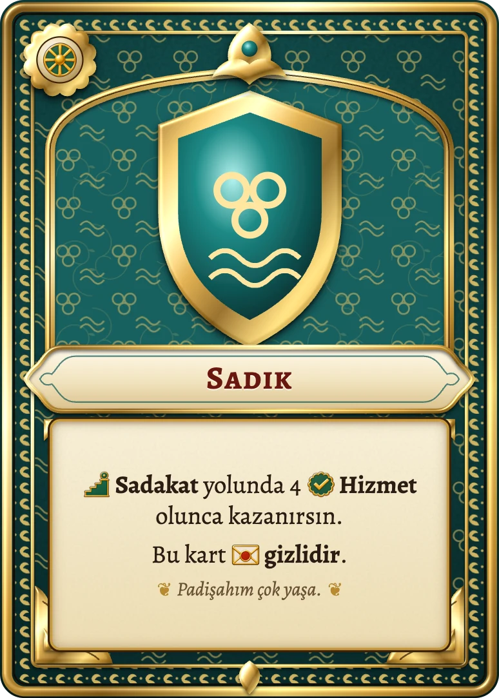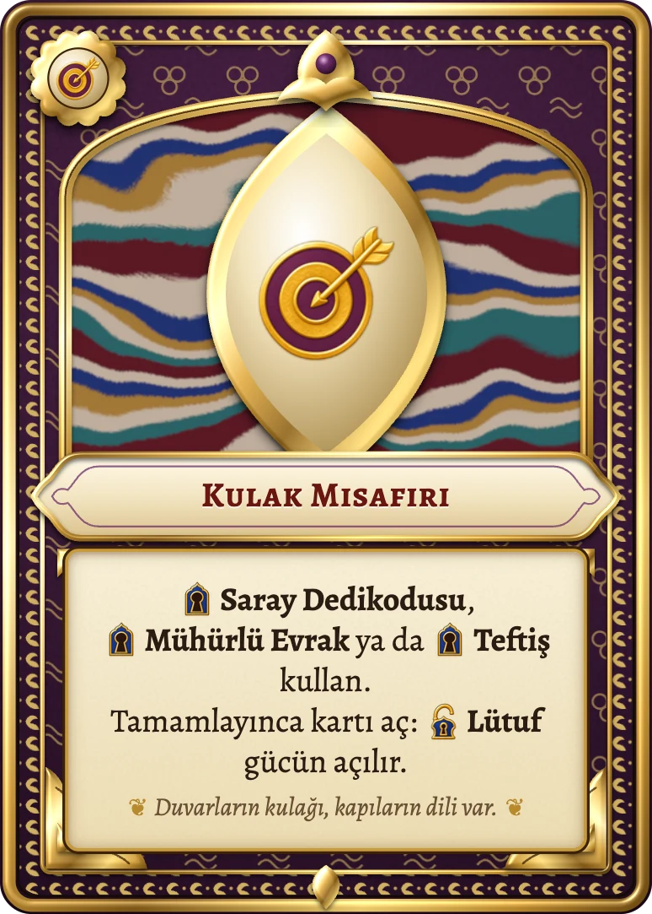
  </div><i class="home"></i></div><i class="island"></i></div></div><figcaption><span class="tag-prv">yalnız sen</span><b>Press and hold the sealed letter.</b> Taraf, your Character's motive for that side, and your Hırs. Lift your finger and it closes.</figcaption></figure>
    <figure><div class="fr "><div class="ph ui th-split" lang="tr"><div class="full zl"><div class="bd" style="grid-template-columns:254px 1fr;gap:30px;padding:9px 0 0 22px">
    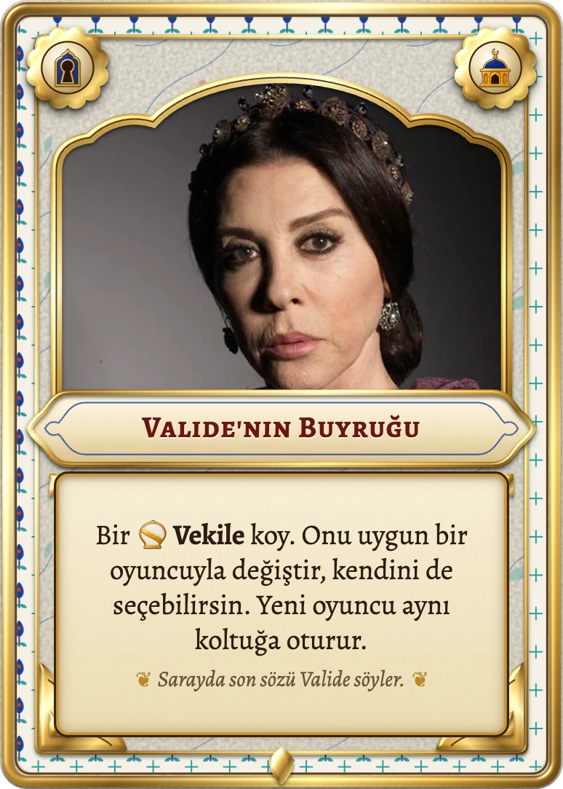
    <div style="display:grid;align-content:start;gap:10px;padding-top:22px;position:relative">
      <span style="position:absolute;right:0;top:6px;width:44px;height:44px;display:grid;place-items:center;color:var(--fg2)"><svg class="gl " viewBox="0 0 20 20" aria-hidden="true"><path d="M5 5l10 10M15 5L5 15"/></svg></span>
      <p class="h-step" style="display:flex;gap:6px;align-items:center">Entrika kartı, Divan</p>
      <p class="h-mid">Valide'nin Buyruğu</p>
      <p class="vo" style="font-size:18px;font-style:normal;max-width:400px">Bir Vekile koy. Onu uygun bir oyuncuyla değiştir; kendini de seçebilirsin. Yeni oyuncu aynı koltuğa oturur.</p>
      <div class="rule" style="max-width:400px"></div>
      <p class="vo" style="font-size:15px;max-width:400px">Bu krizde oynanabilir. Koltuğunu kaybeden Vekil bir kart çeker.</p>
      <div class="bt" style="justify-content:flex-start;margin-top:10px"><span class="b pri">Bu kartı seç</span></div>
    </div></div><i class="home"></i></div><i class="island"></i></div></div><figcaption><span class="tag-prv">yalnız sen</span><b>Long-press a card.</b> The full card at 254 px, with its rule restated in interface type and whether it can be played now.</figcaption></figure>
    <figure><div class="fr "><div class="ph ui th-split" lang="tr"><div class="full zp"><div class="bd" style="grid-template-columns:214px 1fr;gap:26px;padding:20px 0 0 12px">
    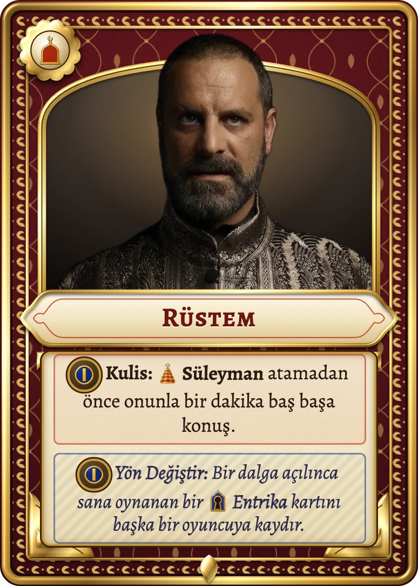
    <div style="display:grid;align-content:start;gap:9px;padding-top:4px;position:relative">
      <span style="position:absolute;right:0;top:0;width:44px;height:44px;display:grid;place-items:center;color:var(--fg2)"><svg class="gl " viewBox="0 0 20 20" aria-hidden="true"><path d="M5 5l10 10M15 5L5 15"/></svg></span>
      <p class="h-mid">Mert</p>
      <div class="nm-row"><span class="pill plain">Rüstem</span><span class="pill" style="padding-left:2px"><span class="star  " style="width:20px;height:20px;font-size:10px"><svg viewBox="0 0 24 24"><polygon points="12.00,0.60 15.41,3.78 20.06,3.94 20.22,8.59 23.40,12.00 20.22,15.41 20.06,20.06 15.41,20.22 12.00,23.40 8.59,20.22 3.94,20.06 3.78,15.41 0.60,12.00 3.78,8.59 3.94,3.94 8.59,3.78" fill="#d2ab52" stroke="#6b4d0f" stroke-width="1"/></svg><span>2</span></span>2 Nüfuz</span><span class="pill">Nigar Kalfa</span><span class="pill plain">Elinde 2 kart</span></div>
      <ul class="pw" style="margin-top:2px;max-width:420px">
        <li class="used"><i class="d"></i><b>Kulis</b><small>kriz 2'de kullandı: Süleyman'la bir dakika özel konuştu</small></li>
        <li class="lock"><i class="d"></i><b>Yön Değiştir</b><small>Hırsını tamamlarsa açılır</small></li>
        <li><i class="d"></i><b>Nigar Kalfa</b><small>bir kartı Mühürlü Evrak yapar, bu krizde hazır</small></li>
      </ul>
      <p class="wait" style="margin:2px 0 0;color:var(--fg)">Bu krizde önünde: <span class="tg">Akıl Hocası</span></p>
      <div class="priv zl"><small><svg class="gl " viewBox="0 0 20 20" aria-hidden="true"><path d="M2 10s3-5 8-5 8 5 8 5-3 5-8 5-8-5-8-5z"/><circle cx="10" cy="10" r="2.2"/></svg>Yalnız sen görürsün</small><span class="b on2">Şüpheli</span><span class="b">Güvenilir</span></div>
    </div></div><i class="home"></i></div><i class="island"></i></div></div><figcaption><span class="tag-pub">herkes görür</span><b>Long-press a seat.</b> Public facts on paper. Your private mark sits on a lacquer strip, because only you see it.</figcaption></figure>
    <figure><div class="fr "><div class="ph ui th-split" lang="tr"><div class="full zp"><div class="bd" style="padding:14px 4px 0 8px;display:block">
    <div style="display:flex;align-items:center;gap:14px;height:40px">
      <p class="h-mid" style="font-size:24px">Sicil</p>
      <span class="tabs"><b>Krizler</b><span>Bütün olaylar</span></span>
      <span style="margin-left:auto;width:44px;height:44px;display:grid;place-items:center;color:var(--fg2)"><svg class="gl " viewBox="0 0 20 20" aria-hidden="true"><path d="M5 5l10 10M15 5L5 15"/></svg></span></div>
    <table class="sc"><thead><tr><th></th><th>Kriz</th><th>Birinci › İkinci Vekil</th><th>Kader</th><th>Hüküm</th><th>Olanlar</th></tr></thead><tbody>
      <tr><td class="n">1</td><td><b>İstanbul'da Dedikodu</b><span class="f"></span></td><td><span class="pill">Can</span><svg class="gl ar" viewBox="0 0 20 20"><path d="M7 4l6 6-6 6"/></svg><span class="pill">Defne</span></td><td><span class="res h">Hizmet</span></td><td>Defne +1</td><td class="nt"></td></tr>
      <tr><td class="n">2</td><td><b>Macar Seferi</b><span class="f"></span></td><td><span class="pill">Ayşe</span><svg class="gl ar" viewBox="0 0 20 20"><path d="M7 4l6 6-6 6"/></svg><span class="pill">Mert</span></td><td><span class="res x">Hıyanet</span></td><td>Ayşe −1</td><td class="nt">Elif itiraz etti: Can yerine Mert. Mert Kulis'i kullandı.</td></tr>
      <tr><td class="n">3</td><td><b>Kaybolan Mühür</b><span class="f"></span></td><td><span class="pill">Mert</span><svg class="gl ar" viewBox="0 0 20 20"><path d="M7 4l6 6-6 6"/></svg><span class="pill">Defne</span></td><td><span class="res h">Hizmet</span></td><td>Mert +1</td><td class="nt">Ayşe +1 (Gözde'nin Hediyesi).</td></tr>
      <tr><td class="n">4</td><td><b>Divan Kavgası</b><span class="f"></span></td><td><span class="pill">Ayşe</span><svg class="gl ar" viewBox="0 0 20 20"><path d="M7 4l6 6-6 6"/></svg><span class="pill">Defne</span></td><td><span class="res">sürüyor</span></td><td></td><td class="nt">1. dalga: üç kart. Mühür Ayşe'de kaldı.</td></tr>
    </tbody></table>
  </div><i class="home"></i></div><i class="island"></i></div></div><figcaption><span class="tag-pub">herkes görür</span><b>Sicil.</b> One row per crisis: who served, what was played, what Süleyman decreed. This is the evidence players argue from.</figcaption></figure>
  </div>
</section>

<section id="yapim">
  <h2>Build notes</h2>
  <p>The interaction model in <code>ui/v2/notes.md</code> stands: asks addressed to one seat, legality from one rules module, scheduled synced moments, no timers. v3 changes what is drawn, and three things about how.</p>
  <ul>
    <li><b>Tap, then tap.</b> Select a card, tap a seat, seal. Drag still works but nothing depends on it; the court is outside thumb reach.</li>
    <li><b>The shelf is the phone's private state.</b> It slides down (240 ms) when a public moment starts and returns after. A private ask covers the whole screen in lacquer.</li>
    <li><b>The Kader deck count leaves the resting screen.</b> It shows in Sonuç and Sicil. The top line has room for the two tracks and the crisis, nothing more.</li>
  </ul>
  <h3>Components</h3>
  <div class="tbl"><table class="t">
    <thead><tr><th>Component</th><th>Holds</th><th>States</th></tr></thead><tbody>
    <tr><td>Screen</td><td>Safe-area board, surfaces that bleed</td><td>table, public moment, private ask, sheet</td></tr>
    <tr><td>Mizan</td><td>Hizmet track, crisis name and field, Hıyanet track, log and settings</td><td>a new space is ringed in gold until the next crisis</td></tr>
    <tr><td>Court, Seat</td><td>Figure in a niche, name plate, Nüfuz star, Kul chip, office band, ready seal, cards laid</td><td>idle, legal, dimmed, picked; Vekil I or II; Süleyman; you; Kul face down; no art</td></tr>
    <tr><td>Shelf</td><td>Identity (sealed letter, power list), Hand, Prompt</td><td>player, Süleyman (slots instead of a hand), hidden</td></tr>
    <tr><td>HandCard</td><td>The 120 px compact card</td><td>playable, selected, through Kul, locked with reason</td></tr>
    <tr><td>Prompt</td><td>Step ticks and name, one sentence, a hint line, up to two buttons</td><td>your move, waiting (count and who), disabled with reason</td></tr>
    <tr><td>Moment</td><td>Kriz, Açılış, Sonuç, Hüküm, game end</td><td>always paper, same on every phone</td></tr>
    <tr><td>Ask</td><td>Kader pick, peeks, secrets, card detail</td><td>always lacquer, only on the addressed phone</td></tr>
    <tr><td>Sheet</td><td>Sicil, seat sheet, settings</td><td>paper, with a lacquer strip for anything private</td></tr>
  </tbody></table></div>
  <h3>Motion</h3>
  <div class="tbl"><table class="t">
    <thead><tr><th>Event</th><th>What moves</th><th>Time</th></tr></thead><tbody>
    <tr><td>A card is lifted</td><td>The card rises 18 px; seats that aren't legal fade to 34%</td><td class="num">160 ms</td></tr>
    <tr><td>A card is placed</td><td>It travels to the seat, turns face down and settles as a 12×17 chip</td><td class="num">320 ms</td></tr>
    <tr><td>A Vekil is named</td><td>Lapis fills the niche from the base; the band slides up</td><td class="num">360 ms</td></tr>
    <tr><td>A public moment starts</td><td>The shelf slides down; the court stays where it is</td><td class="num">240 ms</td></tr>
    <tr><td>Açılış</td><td>Chips grow to 80 px cards under their seats and turn together</td><td class="num">480 + 700 ms</td></tr>
    <tr><td>Sonuç</td><td>The Kader card turns; its track space fills; a gold ring stays</td><td class="num">700 + 400 ms</td></tr>
    <tr><td>Reduced motion</td><td>Every item above becomes a 120 ms cross-fade</td><td class="num">120 ms</td></tr>
  </tbody></table></div>
  <h3>Assets this needs</h3>
  <ul>
    <li><b>Cut-outs.</b> Seven Characters have them. Mustafa, Barbaros, Gritti, Şarlken and Şah Tahmasp need stills first, then the same macOS Vision cut-out. Pargalı and Hatice come from 300 px sources: sharp in a 90 px niche, soft in the 150 px Hüküm niche.</li>
    <li><b>Baked cards.</b> Each card as a WebP at 120 and 258 px wide, 3x. The 13 on this page were baked from the art page with <code>ui/v3/src/bake-cards.mjs</code>. The game should ship baked cards, not the live SVG filters.</li>
    <li><b>Line glyphs.</b> Eight are drawn here (check, lock, log, settings, eye, close, hold, back). The game needs about fourteen.</li>
    <li><b>Fonts.</b> Alegreya Sans 500, 700, 800; Alegreya 400 italic, 700, 800; Alegreya SC 800 for the wordmark. All cover Turkish.</li>
  </ul>
</section>

<section id="kararlar">
  <h2>Decisions for Jingle</h2>
  <ol>
    <li><b>Surface.</b> Kâğıt ve lake (recommended), all paper, or all dark.</li>
    <li><b>Court order.</b> A fixed row with Süleyman in the middle, the same on every phone (recommended). This replaces the 13 November decision of an arc that starts at the viewer's left. It also puts your own seat in the row.</li>
    <li><b>Icons.</b> Emblems for game terms and cards only, line glyphs for interface chrome (recommended), or emblems everywhere as in v2.</li>
    <li><b>Interface type.</b> Alegreya Sans for the interface and Alegreya italic for the game's voice (recommended), or keep small caps throughout.</li>
    <li><b>Kader deck count.</b> Off the resting screen, shown in Sonuç and Sicil (recommended), or kept on the top line at the cost of the field name.</li>
    <li><b>Sicil.</b> A per-crisis table as the first tab of the log (recommended), with the full event list behind it.</li>
  </ol>
</section></main>
<script>
(function(){
  var root=document.documentElement; root.classList.add('js');
  function fit(){ document.querySelectorAll('.fr').forEach(function(f){ f.style.setProperty('--s', f.clientWidth/868); }); }
  fit(); addEventListener('resize', fit);
  if (window.ResizeObserver) { var ro=new ResizeObserver(fit); document.querySelectorAll('.fr').forEach(function(f){ ro.observe(f); }); }
  if (document.fonts && document.fonts.ready) document.fonts.ready.then(fit);
  document.querySelectorAll('.grid2 > figure').forEach(function(g){ g.addEventListener('click', function(){ g.classList.toggle('big'); fit(); }); });
  var ph=document.querySelector('#thfig .ph');
  document.querySelectorAll('.seg button').forEach(function(b){ b.addEventListener('click', function(){
    document.querySelectorAll('.seg button').forEach(function(x){ x.setAttribute('aria-pressed', x===b ? 'true' : 'false'); });
    ph.classList.remove('th-split','th-paper','th-lake'); ph.classList.add(b.dataset.th); }); });
})();</script>
